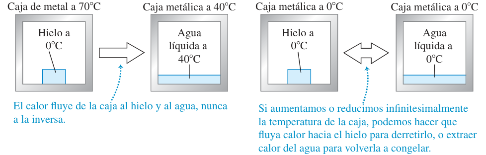
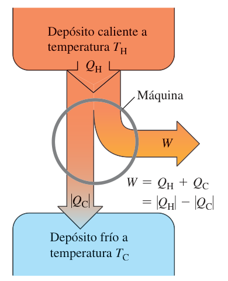
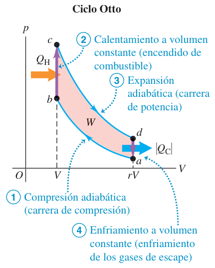
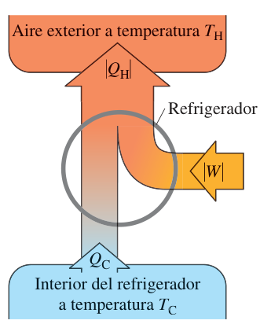
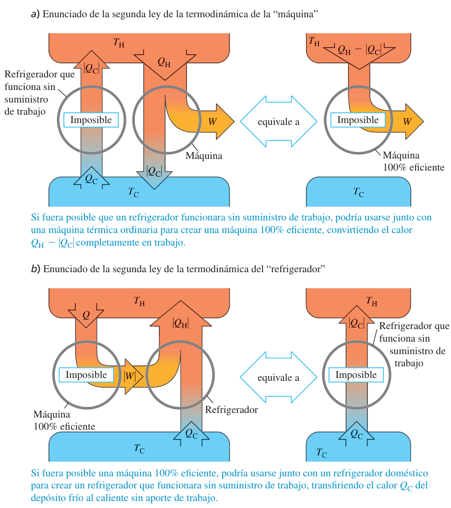
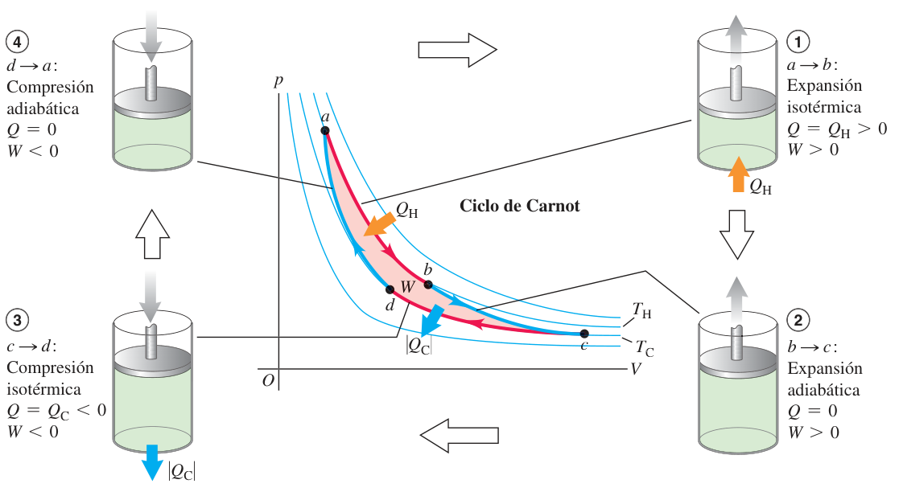
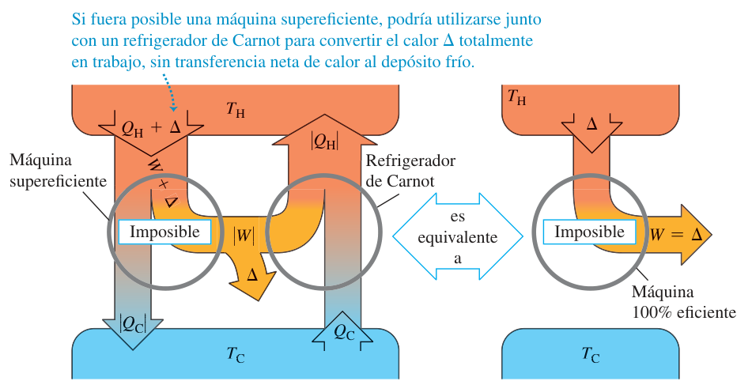
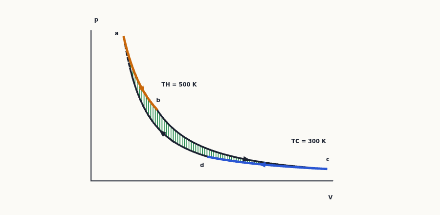
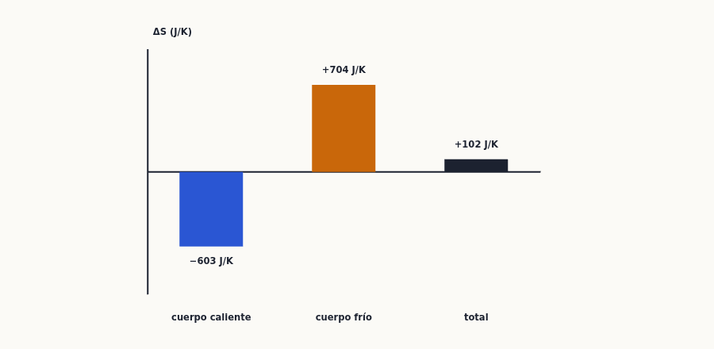
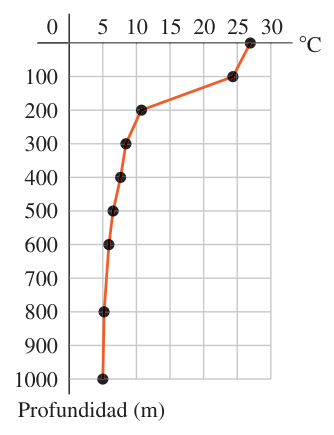

Segunda ley de la termodinámica
La primera ley dice que la energía se conserva; la segunda dice en qué sentido ocurren las cosas. Aprenderás por qué ninguna máquina convierte todo el calor en trabajo, cómo se calcula la eficiencia de motores y el coeficiente de rendimiento de refrigeradores, qué hace especial al ciclo de Carnot y cómo la entropía mide la irreversibilidad: lo que cae en examen una y otra vez es una tabla de calores, una eficiencia comparada con la de Carnot y un $\Delta S$ bien calculado.
0Antes de empezar U p.647
Prerrequisitos: (1) la primera ley y los cuatro procesos del gas ideal (tema 19): $\Delta U=Q-W$, $W=\int p\,dV$, $\Delta U=nC_V\Delta T$, isotermo $W=nRT\ln\frac{V_2}{V_1}$, adiabático $TV^{\gamma-1}=$ cte; (2) calor, calor específico y calor latente (tema 17): $Q=mc\,\Delta T$ y $Q=mL$; (3) gas ideal (tema 18): $pV=nRT$, $C_V=\tfrac32R$ (monoatómico) y $\tfrac52R$ (diatómico); (4) un poco de cálculo: $\int dT/T=\ln T$. Temperaturas siempre en kelvin en cualquier fórmula de este tema.
Mapa del tema (sigue el orden de U): 20.1 procesos reversibles e irreversibles; 20.2 máquinas térmicas y eficiencia; 20.3 motores de combustión interna (Otto y Diesel); 20.4 refrigeradores y coeficiente de rendimiento; 20.5 los dos enunciados de la segunda ley; 20.6 ciclo de Carnot ($e=1-T_C/T_H$); 20.7 entropía ($dS=dQ/T$, $\Delta S_{total}\ge0$); 20.8 interpretación microscópica ($S=k\ln w$). Después, un apartado de método (§9), las cuestiones de teoría (§10) y los ejercicios (§11).
Hay 9 problemas de examen real cuyo cálculo termina en el tema 20 (X1-X9) y 2 preguntas de teoría sobre la segunda ley (T1-T2). Los problemas X5-X9 son ciclos de gas ideal que también aparecen en el tema 19: allí se hace la tabla $Q$-$W$-$\Delta U$ y aquí se calculan la eficiencia, la comparación con Carnot y la entropía. Todos están resueltos en §11.1 y §10.
| Convocatoria y pregunta | De qué va | Dónde |
|---|---|---|
| Examen Febrero 2020 (2ª semana) P-2 | Refrigerador de Carnot con 18 mol de gas monoatómico entre 450 K y 150 K: ciclo, $K$, calores, entropías, estados | §11.1, X1 |
| Examen Febrero 2018 (1ª semana) P-2 | Máquina de Carnot a 30 ciclos/s: calor y trabajo en cada transición, rendimiento y potencia | §11.1, X2 |
| Examen Febrero 2025 (1ª semana) P-2 | Refrigerador con gas diatómico: isoterma, isócora, isóbara; coeficiente de rendimiento | §11.1, X3 |
| Examen Septiembre 2019 (Original) P-2 | Cilindro aislado con pistón conductor: presión, temperatura y variación de entropía | §11.1, X4 |
| Examen Febrero 2019 (1ª semana) P-1 | Ciclo ABCA de un mol de gas monoatómico: entropía por proceso y rendimiento | §11.1, X5 |
| Examen Febrero 2023 (2ª semana) P-2 | Máquina con isócora, isoterma e isóbara (3 mol): eficiencia y comparación con Carnot | §11.1, X6 |
| Examen Septiembre 2024 P-2 | Ciclo con 1,5 mol de helio: eficiencia frente a la máquina de máxima eficiencia | §11.1, X7 |
| Examen Febrero 2025 (2ª semana) P-2 | Ciclo isóbaro, isócoro y recta: eficiencia | §11.1, X8 |
| Examen Febrero 2019 (2ª semana) P-2 | Ciclo de 1 kg de aire con dos adiabáticas: rendimiento | §11.1, X9 |
| Examen Febrero 2018 (2ª semana) P-3 (3.2); Septiembre 2019 (Original) P-3 (3.2); Septiembre 2024 P-4 (B) | Teoría (4 puntos): «Procesos reversibles e irreversibles. Ciclo de Carnot» / «Irreversibilidad de los procesos térmicos…» / «La segunda ley de la termodinámica» con dos cuestiones | §10, T1 y T2 |
- Identifica el dispositivo: ciclo horario ⇒ máquina (trabajo útil, $e=W/Q_H$); antihorario ⇒ refrigerador (consume trabajo, $K=|Q_C|/|W|$).
- Haz la lista de calores por tramo (tema 19) y separa los que entran ($Q>0$, suman $Q_H$ en una máquina o $Q_C$ en un refrigerador) de los que salen ($Q<0$). Comprueba $|W|=\big|\sum Q_{entra}\big|-\big|\sum Q_{sale}\big|$.
- Carnot: $\dfrac{|Q_C|}{|Q_H|}=\dfrac{T_C}{T_H}$, $e=1-\dfrac{T_C}{T_H}$, $K=\dfrac{T_C}{T_H-T_C}$, en kelvin. Para comparar un ciclo cualquiera con Carnot usa su $T$ máxima y su $T$ mínima.
- Entropía: isotermo $\Delta S=Q/T$; si $T$ cambia, $\Delta S=\int dQ/T$ ($nC_V\ln\frac{T_2}{T_1}$, $nC_p\ln\frac{T_2}{T_1}$, $mc\ln\frac{T_2}{T_1}$); adiabático reversible 0; en un ciclo la suma es 0. Un proceso irreversible se calcula con un camino reversible inventado con los mismos extremos.
- Comprueba con la segunda ley: $e<e_{Carnot}$, $\Delta S_{total}\ge0$.
1Procesos reversibles e irreversibles U p.647-648
Imagina que grabas una película: una taza de café caliente se enfría en la mesa, un libro que resbala se para por el rozamiento, una gota de tinta se extiende en un vaso de agua. Si proyectas la película al revés, sabes que algo está mal: el café no se calienta solo cogiendo calor del aire, el libro no arranca solo enfriando la mesa, la tinta no se junta sola. Y sin embargo la energía se conservaría en la película invertida, así que la primera ley no prohíbe nada. Lo que da sentido al tiempo es la segunda ley.
U p.647Un proceso reversible es un proceso idealizado en el que el sistema está siempre muy cerca del equilibrio termodinámico (consigo mismo y con el entorno): cualquier cambio de estado puede invertirse con solo modificar infinitesimalmente las condiciones. Un proceso irreversible no puede invertirse con un cambio pequeño: durante él el sistema no está en equilibrio hasta el final. Son irreversibles el flujo de calor debido a una diferencia finita de temperatura, la expansión libre de un gas y la conversión de trabajo en calor por fricción.
U p.647-648
Hay una relación entre la dirección de un proceso y el desorden del estado resultante: el aire está más desordenado repartido por todo el recipiente que confinado en un lado; la energía cinética macroscópica (movimiento organizado de muchas moléculas) pasa a energía térmica (movimiento desordenado). Los procesos naturales van hacia más desorden. Esta idea se hace cuantitativa con la entropía (§7-§8). El tema se plantea con dos grandes tipos de dispositivos: las máquinas térmicas (convierten parcialmente calor en trabajo) y los refrigeradores (llevan calor de un cuerpo frío a uno caliente).
U p.648Decir que «reversible» es «que se puede deshacer». Casi todo se puede deshacer gastando trabajo, pero entonces el entorno no vuelve a su estado inicial. En un proceso reversible, sistema y entorno vuelven al estado inicial con un cambio infinitesimal de las condiciones; es una idealización que no se consigue perfectamente en el mundo real.
P2Máquinas térmicas y eficiencia U p.649-652
Un molino de agua aprovecha que el agua cae de un nivel alto a uno bajo: parte de la energía de la caída mueve la rueda y el resto se va con el agua que sale. Una máquina térmica hace lo mismo con el calor: el calor «cae» de un foco caliente a uno frío, y una parte se convierte en trabajo mientras el resto se tira al foco frío. Es como una tienda: lo que pagas es el calor $Q_H$ (el combustible), lo que cobras es el trabajo $W$, y la eficiencia es lo que cobras entre lo que pagas. La experiencia dice que siempre hay una «comisión»: el calor $Q_C$ que se desperdicia nunca es cero.
U p.649-650Una máquina térmica es un dispositivo que convierte parcialmente calor en trabajo. La sustancia de trabajo (el gas, por ejemplo) recorre un ciclo: vuelve al estado inicial, así que $\Delta U=0$. Toma calor $Q_H$ de un depósito caliente (temperatura constante $T_H$), convierte parte en trabajo $W$ y cede calor $Q_C$ a un depósito frío ($T_C<T_H$). Con la convención de U (la del tema 19): $Q>0$ si entra a la sustancia de trabajo; por tanto en una máquina $Q_H>0$ y $Q_C<0$. Para cada ciclo: $$Q=Q_H+Q_C=|Q_H|-|Q_C|\quad(20.1),\qquad W=Q=Q_H+Q_C=|Q_H|-|Q_C|\quad(20.2).$$
U p.649-650
$$\boxed{\,e=\frac{W}{Q_H}=1+\frac{Q_C}{Q_H}=1-\left|\frac{Q_C}{Q_H}\right|\,}\quad(20.3)\text{-}(20.4)$$ Es la fracción de $Q_H$ que se convierte en trabajo: «lo que obtienes entre lo que pagas». Es un número puro (todo en las mismas unidades) y siempre menor que 1.
U p.650(1) Cuidado con los signos: $Q_C=-|Q_C|$. (2) Potencia $P=W/t$ y corriente de calor $H=Q/t$: pregúntate «¿cuánto vale $W$ o $Q$ en un segundo (o en una hora)?», p. ej. potencia = trabajo por ciclo × ciclos por segundo. (3) Dibuja el diagrama de flujo y comprueba con la primera ley.
U p.651El motor de gasolina de un camión toma 10 000 J de calor y produce 2000 J de trabajo mecánico por ciclo. El combustible tiene calor de combustión $L_c=5{,}0\times10^4$ J/g. a) Eficiencia. b) Calor que se desecha por ciclo. c) Potencia si hace 25 ciclos/s. d) Gasolina quemada por ciclo. e) Por segundo y por hora.
- a) $e=W/Q_H=2000/10\,000=\mathbf{0{,}20}$ (20 %).
- b) $W=Q_H+Q_C$ ⇒ $Q_C=2000-10\,000=\mathbf{-8000\ J}$: salen 8000 J por ciclo.
- c) $P=2000\ \text{J/ciclo}\cdot25\ \text{ciclos/s}=\mathbf{50\,000\ W=50\ kW}\ (\approx67\ \text{hp})$.
- d) $Q_H=mL_c$ ⇒ $m=10\,000/(5{,}0\times10^4)=\mathbf{0{,}20\ g}$ por ciclo.
- e) $0{,}20\cdot25=\mathbf{5{,}0\ g/s}$, es decir, $5{,}0\cdot3600=18\,000$ g $=\mathbf{18\ kg/h}$.
(1) Calcular $e=W/|Q_C|$ o $e=|Q_C|/Q_H$ (la eficiencia compara el trabajo con el calor absorbido). (2) Pensar que una máquina con mejor mantenimiento puede llegar a $e=1$: la segunda ley lo prohíbe (§5). (3) Multiplicar el calor absorbido (y no el trabajo neto) por los ciclos por segundo para la potencia.
P3Motores de combustión interna U p.652-654
El motor de gasolina de un coche es una máquina térmica cuyo «foco caliente» es la propia combustión dentro del cilindro. Cada ciclo comprime la mezcla de aire y gasolina, salta la chispa, el gas ardiendo empuja el pistón (esa es la carrera que da el trabajo) y se expulsan los gases. U lo modela con el ciclo Otto: cuatro pasos con un gas ideal. Cuanto más se comprime la mezcla antes de encenderla, más eficiente es el motor.
U p.652-653
Con $r=V_a/V_b$ la razón de compresión y $\gamma=C_p/C_V$ del gas (aire: $\gamma=1{,}4$): $$\boxed{\,e=1-\frac{1}{r^{\gamma-1}}\,}\quad(20.6)$$ Se deduce de $Q_H=nC_V(T_c-T_b)>0$, $Q_C=nC_V(T_a-T_d)<0$ y de las adiabáticas $T_a(rV)^{\gamma-1}=T_bV^{\gamma-1}$, $T_d(rV)^{\gamma-1}=T_cV^{\gamma-1}$. Con $r=8$ y $\gamma=1{,}4$: $e=0{,}56$ (56 %). Subir $r$ mejora $e$, pero la mezcla se calienta al comprimirla y se enciende sola si $r$ es demasiado grande (preignición, golpeteo); para gasolina de alto octanaje, $r$ práctica máxima ≈ 10-13. Los motores reales rinden ≈ 35 %.
U p.653En el motor diésel no hay combustible en el cilindro durante la compresión, así que no hay preignición y $r$ puede ser mucho mayor ($r=15$-$20$). Los pasos son: compresión adiabática $a\to b$, calentamiento a presión constante $b\to c$ (el combustible se inyecta y se enciende solo por la alta temperatura), expansión adiabática $c\to d$ y enfriamiento a volumen constante $d\to a$. Con $\gamma=1{,}4$ y $r=15$-$20$ la eficiencia teórica es $e\approx0{,}65$-$0{,}70$; el motor real rinde mucho menos.
U p.653-654Usar $r^{\gamma}$ en lugar de $r^{\gamma-1}$ en (20.6), o un $\gamma=5/3$ para el aire (es diatómico: $\gamma=1{,}4$). Y la fórmula (20.6) es del ciclo Otto ideal; no vale para un ciclo isóbaro-isócoro cualquiera (X9 se resuelve con $e=1-|Q_C|/Q_H$).
P4Refrigeradores U p.654-656
Un refrigerador es una máquina térmica funcionando al revés. El calor, por sí solo, solo va de caliente a frío (como el agua solo baja). Para llevarlo «cuesta arriba», del interior frío del frigorífico al aire caliente de la cocina, hace falta una bomba, es decir, trabajo que entra (el compresor). Lo que quieres es sacar mucho calor $Q_C$ del interior gastando poco trabajo: la «calidad» es $Q_C/|W|$. Por eso la parte trasera del frigorífico está caliente: ahí se entrega $|Q_H|=|Q_C|+|W|$.
U p.654
Con las convenciones de signos de §2, en un refrigerador $Q_C>0$ (entra a la sustancia de trabajo), mientras que $W<0$ y $Q_H<0$ ($|W|=-W$, $|Q_H|=-Q_H$). La primera ley del ciclo da $$|Q_H|=Q_C+|W|\quad(20.7),\qquad |Q_H|=|Q_C|+|W|\quad(20.8),$$ válida también para máquinas. El coeficiente de rendimiento es $$\boxed{\,K=\frac{|Q_C|}{|W|}=\frac{|Q_C|}{|Q_H|-|Q_C|}\,}\quad(20.9)$$ Cuanto mayor es $K$, mejor es el refrigerador. $K$ no es un porcentaje ni tiene tope en 1: puede ser mayor que 1. Como $Q_C$ y $W$ se miden por ciclo, $K=H/P$ también con potencias (potencia de enfriamiento entre potencia eléctrica).
U p.654-656En un refrigerador doméstico (fig. 20.9) un fluido refrigerante recorre un circuito: el compresor (movido por un motor eléctrico) lo comprime y realiza el trabajo $|W|$; en el condensador (serpentín exterior, caliente y a alta presión) cede $|Q_H|$ al aire; en la válvula de expansión el fluido se expande adiabáticamente y se enfría; en el evaporador (serpentín interior, frío y a baja presión) absorbe $|Q_C|$ del interior. Un aire acondicionado (fig. 20.10) funciona igual: el evaporador está dentro de la habitación y el condensador fuera. Lo que importa en la práctica es la corriente de calor extraído $H=|Q_C|/t$ y la potencia eléctrica $P=|W|/t$, de modo que $K=\dfrac{|Q_C|}{|W|}=\dfrac{H}{P}$. Los aparatos domésticos tienen $H\approx1500$-$3000$ W, $P\approx600$-$1200$ W y $K\approx3$. Una bomba de calor es un refrigerador al revés: el evaporador está fuera (toma calor del aire frío) y el condensador dentro (cede calor a la casa); el calor $|Q_H|$ que entra en casa puede ser mucho mayor que el trabajo $|W|$.
Ejemplo propio. Un aire acondicionado extrae $H=2400$ W y consume $P=800$ W: $K=H/P=2400/800=3{,}0$. Cede al exterior $|Q_H|/t=H+P=3200$ W (por (20.8)). En una hora saca $2400\cdot3600=8{,}64\times10^6$ J y gasta $800\cdot3600=2{,}88\times10^6$ J $=0{,}8$ kWh. Con la habitación a 22 °C (295,15 K) y el exterior a 35 °C (308,15 K), un refrigerador de Carnot tendría $K=\frac{295{,}15}{13}=22{,}7$: el aparato real consigue solo el 13 % del máximo.
U p.655-656 P(1) Pensar que $|Q_H|<|Q_C|$: el calor entregado al exterior siempre es mayor porque incluye el trabajo del compresor. (2) Llamar «eficiencia $e=W/Q_H$» a un refrigerador: su cifra de mérito es $K=|Q_C|/|W|$ (en un ciclo antihorario, ni siquiera $W>0$). (3) Poner en el numerador de $K$ el calor cedido al foco caliente.
P5La segunda ley de la termodinámica U p.656-658
Los dos casos anteriores comparten una prohibición: nadie ha construido una máquina que convierta todo el calor en trabajo (sin tirar nada al foco frío), ni un refrigerador que enfríe sin gastar trabajo. No es un fallo de ingeniería que se arregle con mejores materiales: es una ley de la naturaleza, independiente de la primera. La primera niega crear o destruir energía; la segunda limita la disponibilidad de la energía y las formas en que puede usarse y convertirse.
U p.656-657Es imposible que un sistema efectúe un proceso en el que absorba calor de un depósito a una sola temperatura y lo convierta totalmente en trabajo mecánico, terminando en el mismo estado en que inició. (Es decir, ninguna máquina tiene $e=1$.)
U p.656Es imposible que un proceso tenga como único resultado la transferencia de calor de un cuerpo más frío a uno más caliente. (Hace falta gastar trabajo, como en el refrigerador de §4.)
U p.657
(1) Olvidar las condiciones del enunciado: «único resultado» y «terminando en el mismo estado». Un gas que se expande isotérmicamente convierte todo el calor en trabajo, pero termina en otro estado; no es un ciclo. (2) Confundir las dos leyes: que el calor fluya de frío a caliente no viola la primera (la energía se conserva si lo que sale de uno entra en el otro); viola la segunda (T2).
U p.647, 656-6576El ciclo de Carnot U p.658-664
Según la segunda ley, ninguna máquina llega a $e=1$. Entonces, ¿cuál es el máximo posible? La respuesta la dio Sadi Carnot: la máquina que no desperdicia nada evitable. Las pérdidas evitables vienen de los procesos irreversibles, y el más típico es pasar calor entre cuerpos con una diferencia de temperatura finita. Así que Carnot propone una máquina donde el calor solo se intercambia cuando el gas está a la misma temperatura que el foco (isotermas) y los cambios de temperatura se hacen sin intercambiar calor (adiabáticas), todo reversible. Es la máquina más eficiente que existe entre dos temperaturas dadas: el «techo» con el que se compara todo lo demás.
U p.658- $a\to b$: expansión isotérmica a $T_H$, absorbiendo $Q_H$ del foco caliente.
- $b\to c$: expansión adiabática hasta que la temperatura baja a $T_C$ ($Q=0$).
- $c\to d$: compresión isotérmica a $T_C$, cediendo $|Q_C|$ al foco frío.
- $d\to a$: compresión adiabática hasta el estado inicial, a $T_H$ ($Q=0$).
Son dos isotermas y dos adiabáticas, todas reversibles. Recorrido en sentido horario es una máquina; en el antihorario, un refrigerador (§4).
U p.659
En las isotermas $\Delta U=0$ y $Q=W$ (tema 19): $$Q_H=nRT_H\ln\frac{V_b}{V_a}\quad(20.10),\qquad Q_C=nRT_C\ln\frac{V_d}{V_c}=-nRT_C\ln\frac{V_c}{V_d}\quad(20.11).$$ De las adiabáticas $T_HV_b^{\gamma-1}=T_CV_c^{\gamma-1}$ y $T_HV_a^{\gamma-1}=T_CV_d^{\gamma-1}$ se deduce $\dfrac{V_b}{V_a}=\dfrac{V_c}{V_d}$, y los logaritmos se cancelan: $$\boxed{\,\frac{|Q_C|}{|Q_H|}=\frac{T_C}{T_H}\ \ \Big(\tfrac{Q_C}{Q_H}=-\tfrac{T_C}{T_H}\Big)\,}\quad(20.13),\qquad \boxed{\,e_{Carnot}=1-\frac{T_C}{T_H}\,}\quad(20.14).$$ Las temperaturas, en kelvin. La eficiencia de Carnot solo depende de $T_H$ y $T_C$ (no de la sustancia ni de los volúmenes), y es menor que 1: valdría 1 solo si $T_C=0$, inalcanzable.
U p.659-660Ninguna máquina que opere entre dos depósitos dados a $T_H$ y $T_C$ puede tener mayor eficiencia que una de Carnot entre ellos (si la hubiera, acoplada a un refrigerador de Carnot daría una máquina 100 % eficiente, imposible: fig. 20.15). Consecuencia: todas las máquinas de Carnot entre las mismas temperaturas tienen la misma eficiencia, sea cual sea la sustancia. $e_{Carnot}$ es un límite superior para una máquina real: para mejorarla hay que subir $T_H$ y bajar $T_C$ (que no puede ser menor que la temperatura más baja disponible, p. ej. un río).
U p.662-663
Un refrigerador de Carnot es el ciclo anterior recorrido al revés, y su coeficiente de rendimiento es $$\boxed{\,K_{Carnot}=\frac{T_C}{T_H-T_C}\,}\quad(20.15)$$ Es el máximo para cualquier refrigerador entre esas temperaturas; crece cuando las temperaturas se acercan. Además, como $|Q_C|/|Q_H|$ no depende de la sustancia, Kelvin propuso definir la escala de temperatura por $\dfrac{T_C}{T_H}=\dfrac{|Q_C|}{|Q_H|}$ (20.16), que no depende de ningún material. Se fija el punto triple del agua en 273,16 K y así la escala Kelvin coincide con la del termómetro de gas ideal. Su punto cero es el cero absoluto: el sistema tiene su mínima energía interna posible (aunque, por efectos cuánticos, no cesa todo el movimiento molecular). La tercera ley dice que es imposible alcanzar el cero absoluto en un número finito de pasos termodinámicos; coherente con que $e_{Carnot}=1$ exigiría $T_C=0$.
U p.662-664Si te piden «compárala con la máxima eficiencia posible con los depósitos caliente y frío de este ciclo», toma como $T_H$ la temperatura máxima del ciclo y como $T_C$ la mínima (el foco caliente debe estar al menos tan caliente como el gas en su punto más caliente, y el frío como mucho tan frío como en el más frío), en kelvin: $e_{Carnot}=1-T_{min}/T_{max}$. La eficiencia real sale siempre menor (X6, X7).
PUna máquina de Carnot toma 2000 J de calor de un depósito a 500 K, realiza trabajo y desecha calor a un depósito a 350 K. ¿Cuánto calor se desecha, cuánto trabajo se hace y cuál es la eficiencia?
- (20.13): $Q_C=-Q_H\dfrac{T_C}{T_H}=-2000\cdot\dfrac{350}{500}=\mathbf{-1400\ J}$.
- (20.2): $W=Q_H+Q_C=2000-1400=\mathbf{600\ J}$.
- $e=\dfrac{W}{Q_H}=\dfrac{600}{2000}=\mathbf{0{,}30}$ (30 %); con (20.14): $1-\dfrac{350}{500}=0{,}30$ ✓.
0,200 mol de un gas ideal diatómico ($\gamma=1{,}40$) describen un ciclo de Carnot entre 227 °C y 27 °C, partiendo de $p_a=10{,}0\times10^5$ Pa. El volumen se duplica en la expansión isotérmica $a\to b$. a) Presión y volumen en $a,b,c,d$. b) $Q$, $W$ y $\Delta U$ por paso. c) Eficiencia.
- Temperaturas: $T_H=500$ K, $T_C=300$ K. $V_a=\dfrac{nRT_H}{p_a}=\dfrac{0{,}200\cdot8{,}314\cdot500}{10{,}0\times10^5}=8{,}31\times10^{-4}$ m³; $V_b=2V_a=16{,}6\times10^{-4}$ m³; $p_b=p_aV_a/V_b=5{,}00\times10^5$ Pa.
- Adiabática $b\to c$: $V_c=V_b\left(\dfrac{T_H}{T_C}\right)^{1/(\gamma-1)}=16{,}6\times10^{-4}\cdot\left(\tfrac53\right)^{2{,}5}=59{,}6\times10^{-4}$ m³, $p_c=0{,}837\times10^5$ Pa. Y $V_d=V_a(5/3)^{2{,}5}=29{,}8\times10^{-4}$ m³, $p_d=1{,}67\times10^5$ Pa.
- b) $Q_{ab}=W_{ab}=nRT_H\ln2=\mathbf{576\ J}$; $b\to c$: $Q=0$, $W=nC_V(T_H-T_C)=0{,}200\cdot20{,}8\cdot200=\mathbf{832\ J}$, $\Delta U=-832$ J; $Q_{cd}=W_{cd}=nRT_C\ln\frac{V_d}{V_c}=\mathbf{-346\ J}$; $d\to a$: $Q=0$, $W=-832$ J, $\Delta U=+832$ J. Ciclo: $Q=W=576-346=\mathbf{230\ J}$, $\Delta U=0$.
- c) $e=W/Q_H=230/576=\mathbf{0{,}40}=1-300/500$ ✓.
El ciclo del ejemplo 20.3 se recorre al revés, como refrigerador de Carnot. ¿Cuál es su coeficiente de rendimiento?
- Al invertir, $Q_C=+346$ J entra desde el foco frío (300 K), $|Q_H|=576$ J sale al foco caliente (500 K) y se gasta $|W|=230$ J.
- $K=\dfrac{|Q_C|}{|W|}=\dfrac{346}{230}=\mathbf{1{,}50}$; con (20.15): $\dfrac{T_C}{T_H-T_C}=\dfrac{300}{200}=1{,}50$ ✓.

7Entropía U p.664-670
La energía total se conserva, pero hay otra cantidad que solo puede crecer en los procesos reales: la entropía, una medida del desorden o de lo «repartida» que está la energía. Un mismo calor $Q$ desordena más a un cuerpo frío que a uno caliente (como un estornudo en una biblioteca silenciosa molesta más que en una calle ruidosa), y por eso el desorden que aporta el calor es proporcional a $Q/T$: más cuanto menor es $T$. Cuando el calor pasa de un cuerpo caliente a uno frío, el caliente pierde entropía $Q/T_H$, pero el frío gana más, $Q/T_C$ (con $T_C<T_H$): el total sube. Al revés, el total bajaría: eso es lo que prohíbe la segunda ley.
PCuando entra una cantidad infinitesimal de calor $dQ$ a un sistema a temperatura $T$ en un proceso reversible, el cambio de entropía es $$dS=\frac{dQ}{T}\quad(20.17)\ \ \Rightarrow\ \ \boxed{\,\Delta S=\int_1^2\frac{dQ}{T}\,}\ (20.19)\qquad\text{(proceso reversible)}.$$ Si $T$ es constante (proceso isotérmico reversible): $\boxed{\Delta S=\dfrac{Q}{T}}$ (20.18). Unidades: J/K. $T$ en kelvin.
U p.665-666En un ciclo reversible $\oint dQ/T=0$ (20.21), así que $\Delta S$ entre dos estados no depende de la trayectoria: $S$ tiene un valor definido en cada estado. Por tanto, para calcular $\Delta S$ en un proceso irreversible se inventa un proceso reversible con los mismos estados inicial y final y se aplica (20.19) a ese. En un ciclo completo (reversible o no) la $\Delta S$ del sistema es 0 (vuelve al mismo estado).
U p.666, 669Si $T$ cambia durante el proceso hay que integrar, como en el ejemplo 20.6. Y (20.19) solo se aplica a procesos reversibles: en un proceso irreversible, $\int dQ/T$ por la trayectoria real no es $\Delta S$ (en la expansión libre, $Q=0$ pero $\Delta S\neq0$).
U p.666Un kilogramo de hielo a 0 °C se funde y se convierte en agua a 0 °C ($L_f=3{,}34\times10^5$ J/kg). Calcule el cambio de entropía.
- La fusión es isotérmica (273,15 K), $Q=mL_f=3{,}34\times10^5$ J, y (20.18): $\Delta S=\dfrac{3{,}34\times10^5}{273{,}15}=\mathbf{+1{,}22\times10^3\ J/K}$ (el agua líquida está más desordenada que el hielo).
Un kilogramo de agua se calienta de 0 °C a 100 °C ($c=4190$ J/(kg·K) constante). Calcule $\Delta S$.
- Ahora $T$ cambia: $dQ=mc\,dT$ y (20.19): $\Delta S=\displaystyle\int_{T_1}^{T_2}\frac{mc\,dT}{T}=mc\ln\frac{T_2}{T_1}$.
- $\Delta S=1{,}00\cdot4190\cdot\ln\dfrac{373{,}15}{273{,}15}=\mathbf{+1{,}31\times10^3\ J/K}$.
En un proceso adiabático $dQ=0$ y, si es reversible, $\Delta S=0$: son procesos de entropía constante (isoentrópicos). El aumento de desorden por ocupar más volumen se compensa exactamente con la disminución por el descenso de temperatura. Por eso en la gráfica $T$-$S$ de Carnot las adiabáticas son verticales.
U p.667Una caja aislada se divide en dos compartimentos de volumen $V$; uno contiene $n$ moles de gas ideal a $T$ y el otro está vacío. Se rompe la división y el gas llena ambos. Calcule $\Delta S$.
- $Q=0$, $W=0$, $\Delta U=0$ y, al ser gas ideal, $\Delta T=0$. Tentación: «$\Delta S=Q/T=0$». Falso: el proceso es irreversible y (20.19) no vale por la trayectoria real.
- Camino reversible con los mismos extremos: expansión isoterma de $V$ a $2V$ a $T$: $Q=W=nRT\ln2$.
- (20.18): $\Delta S=\dfrac{Q}{T}=\mathbf{nR\ln2}$; para 1 mol, $\mathbf{5{,}76\ J/K}$ ($>0$). En general, de $V$ a $xV$: $nR\ln x$.
Para la máquina de Carnot del ejemplo 20.2 (500 K y 350 K, $Q_H=2000$ J), calcule el cambio total de entropía durante un ciclo y el de los depósitos.
- Adiabáticas: $\Delta S=0$. Isoterma caliente: $\Delta S_H=\dfrac{Q_H}{T_H}=\dfrac{2000}{500}=+4{,}0$ J/K; isoterma fría: $\Delta S_C=\dfrac{Q_C}{T_C}=\dfrac{-1400}{350}=-4{,}0$ J/K.
- $\Delta S_{ciclo}=4{,}0-4{,}0=\mathbf0$: la sustancia vuelve a su entropía inicial.
- Los depósitos: el caliente cede 2000 J, $\Delta S=-2000/500=-4{,}0$ J/K; el frío absorbe 1400 J, $\Delta S=+1400/350=+4{,}0$ J/K. Suma 0: en un ciclo reversible el entorno tampoco cambia su entropía total.
Para Carnot, (20.13) se reescribe $\dfrac{Q_H}{T_H}+\dfrac{Q_C}{T_C}=0$ (20.20), y cualquier ciclo reversible cumple $\oint\dfrac{dQ}{T}=0$ (20.21). Todos los procesos irreversibles aumentan la entropía: la entropía no se conserva. El enunciado general es el principio de aumento de entropía: cuando se incluyen todos los sistemas que participan en un proceso, $$\boxed{\,\Delta S_{total}\ge0\,}\qquad(=0\text{ solo si el proceso es reversible}).$$ La entropía de un sistema aislado puede crecer pero nunca disminuye; la de una parte sí puede disminuir (el cuerpo caliente que se enfría), a costa de que otra parte aumente más.
U p.668-6701,00 kg de agua a 100 °C se pone en contacto térmico con 1,00 kg de agua a 0 °C ($c=4190$ J/(kg·K)). Calcule el cambio total de entropía.
- Masas iguales ⇒ $T_f=\dfrac{373{,}15+273{,}15}{2}=323{,}15$ K (50 °C).
- El proceso real es irreversible, pero $\Delta S$ solo depende de los estados: se calcula cada agua como si se calentara/enfriara reversiblemente, con (20.19): $\Delta S_H=mc\ln\dfrac{323}{373}=\mathbf{-603\ J/K}$ y $\Delta S_C=mc\ln\dfrac{323}{273}=\mathbf{+705\ J/K}$ (con 273,15 K y 323,15 K: $-603$ y $+704$ J/K; total $+102$ J/K).
- $\Delta S_{tot}=-603+705=\mathbf{+102\ J/K}>0$. (Los primeros 4190 J que pasan, con 99 °C y 1 °C, dan ya $-4190/373+4190/273=+4{,}1$ J/K: la entropía crece continuamente hasta el equilibrio.)

(1) Aplicar $\Delta S=Q/T$ al agua que cambia de temperatura. (2) Decir $\Delta S=0$ «porque $Q=0$» en una expansión libre o en un cilindro aislado con un pistón que se suelta (X4). (3) Pensar que la entropía de un cuerpo no puede bajar: lo que no puede bajar es la total. (4) Usar °C: $\Delta S$ con logaritmos exige kelvin.
P8Interpretación microscópica de la entropía U p.670-673
Lanza 4 monedas: hay una sola forma de sacar 4 caras, pero 6 formas de sacar 2 caras y 2 cruces. El resultado «2-2» es el más probable no porque sea especial, sino porque tiene más maneras de ocurrir. Con $10^{23}$ moléculas la diferencia es abismal. Un gas ocupa todo el recipiente y no se acumula en un rincón porque hay incomparablemente más maneras de repartirse por todo él. Entropía = número de maneras (en escala logarítmica).
PUn estado macroscópico (descrito por $p$, $V$, $T$) puede realizarse con $w$ estados microscópicos (posiciones y velocidades concretas de las partículas). La entropía es $$\boxed{\,S=k\ln w\,}\quad(20.22),\qquad \Delta S=S_2-S_1=k\ln\frac{w_2}{w_1}\quad(20.23)$$ con $k=R/N_A$ la constante de Boltzmann. Como el menor $w$ posible es 1, $S\ge0$. En la práctica solo se usa para diferencias: lo que importa es el cociente $w_2/w_1$.
U p.671-672Use (20.23) para calcular $\Delta S$ en la expansión libre de $n$ moles de gas del ejemplo 20.8 (el volumen se duplica).
- Al romper la división las velocidades no cambian (no hay trabajo), pero cada molécula tiene el doble de volumen y por tanto el doble de posiciones posibles: $w_2=2^Nw_1$ con $N=nN_A$.
- $\Delta S=k\ln\dfrac{w_2}{w_1}=k\ln2^N=Nk\ln2=(nN_A)\dfrac{R}{N_A}\ln2=\mathbf{nR\ln2}$, el mismo resultado que el ejemplo 20.8 sin pensar en ninguna trayectoria termodinámica.
- La probabilidad de que todas las moléculas vuelvan a una mitad es $2^{-N}$, astronómicamente pequeña: por eso el proceso no se invierte solo (segunda ley).
9Método para problemas de máquinas, refrigeradores y entropía P
- Dibuja el diagrama de flujo (§2, §4) y escribe los signos: máquina $Q_H>0$, $Q_C<0$, $W>0$; refrigerador $Q_C>0$, $Q_H<0$, $W<0$.
- Primera ley del ciclo: $|Q_H|=|Q_C|+|W|$ en ambos casos.
- Máquina: $e=W/Q_H=1-|Q_C|/Q_H$. Refrigerador: $K=|Q_C|/|W|$. Potencias: multiplica por los ciclos por segundo.
- Completa los vértices: $pV=nRT$ (isotermas) y $TV^{\gamma-1}=$ cte o $pV^\gamma=$ cte (adiabáticas, tema 19); $V_b/V_a=V_c/V_d$.
- Calores solo en las isotermas, $Q=nRT\ln(V_f/V_i)$; trabajos de las adiabáticas iguales y opuestos ($nC_V\Delta T$).
- $e=1-T_C/T_H$ o $K=T_C/(T_H-T_C)$ (kelvin), y comprueba $|Q_C|/|Q_H|=T_C/T_H$.
- Estados con $pV=nRT$; tabla de $Q$ por tramo (tema 19).
- $Q_H$ (o $Q_C$ en un refrigerador) = suma de todos los $Q$ que entran; si un tramo recto cambia el signo de $dQ$ (X8), calcula la parte que entra.
- $e=W/Q_H$ y compara con $1-T_{min}/T_{max}$.
- Gas ideal: isotermo $nR\ln\frac{V_2}{V_1}$; isócoro $nC_V\ln\frac{T_2}{T_1}$; isóbaro $nC_p\ln\frac{T_2}{T_1}$; adiabático reversible 0. En un ciclo, la suma es 0.
- Sólido o líquido: $mc\ln\frac{T_2}{T_1}$; cambio de fase: $\pm mL/T$.
- Proceso irreversible: elige un camino reversible con los mismos extremos. Foco o entorno a $T$ fija: $\Delta S=\pm Q/T$. Suma todas las partes: el total $\ge0$.
10Cuestiones de teoría para el examen X
La pregunta de teoría (4 puntos) ha sido tres veces sobre este tema: «Procesos reversibles e irreversibles. Ciclo de Carnot» (Feb. 2018, 2ª sem., P-3 opción 3.2), «Irreversibilidad de los procesos térmicos. Procesos reversibles e irreversibles» (Sept. 2019, Original, P-3 opción 3.2) y «La segunda ley de la termodinámica» con dos cuestiones (Sept. 2024, P-4 opción B). Estos son los esquemas de respuesta completa (≈ 1,5-2 caras) y las cuestiones de 2024.
T1 — «Procesos reversibles e irreversibles. Ciclo de Carnot» e «Irreversibilidad de los procesos térmicos» X X U p.647-670
Examen Febrero 2018 (2ª semana) P-3, Opción 3.2 (4 puntos): «Procesos reversibles e irreversibles. Ciclo de Carnot.» Examen Septiembre 2019 (Original) P-3, Opción 3.2 (4 puntos): «Irreversibilidad de los procesos térmicos. Procesos reversibles e irreversibles.» (Solo el título; sin cuestiones cortas.)
Esquema de la respuesta ideal.
- Dirección de los procesos (U p. 647): los procesos naturales van en un sentido (calor de caliente a frío, frenado por rozamiento, expansión libre, mezcla). El inverso no violaría la primera ley: lo prohíbe la segunda.
- Reversible frente a irreversible (U p. 648): reversible = idealización en que el sistema pasa por estados de equilibrio (cuasiestático), sin rozamiento ni diferencias finitas de $T$ o $p$; se invierte con un cambio infinitesimal de las condiciones (hielo a 0 °C en una caja a 0 °C $\pm\,dT$, fig. 20.1b). Irreversible: flujo de calor con $\Delta T$ finita (hielo en caja a 70 °C, fig. 20.1a), expansión libre, trabajo convertido en calor por rozamiento; el sistema no está en equilibrio hasta el final. Dibujo: fig. 20.1.
- Desorden (U p. 648): los procesos irreversibles llevan a estados más desordenados (energía cinética ordenada → agitación térmica).
- Segunda ley (U pp. 656-657): enunciados de «máquina» (Kelvin-Planck) y de «refrigerador» (Clausius) y su equivalencia (fig. 20.11), en dos líneas.
- Ciclo de Carnot (U pp. 658-659): para eliminar toda irreversibilidad, el calor solo se intercambia a la temperatura del foco (isotermas a $T_H$ y $T_C$) y los cambios de temperatura son adiabáticos reversibles. Pasos $a\to b$ expansión isoterma (absorbe $Q_H$), $b\to c$ expansión adiabática, $c\to d$ compresión isoterma (cede $|Q_C|$), $d\to a$ compresión adiabática. Dibujo pV obligatorio (fig. 20.13).
- Rendimiento con gas ideal (U pp. 659-660): $Q_H=nRT_H\ln\frac{V_b}{V_a}$, $Q_C=-nRT_C\ln\frac{V_c}{V_d}$; de las adiabáticas $\frac{V_b}{V_a}=\frac{V_c}{V_d}$ ⇒ $\frac{|Q_C|}{|Q_H|}=\frac{T_C}{T_H}$ ⇒ $e_{Carnot}=1-\frac{T_C}{T_H}$ (kelvin). Ejemplo: ej. 20.2 (500 K y 350 K: $e=30\,\%$).
- Teorema de Carnot (U pp. 662-663): ninguna máquina entre $T_H$ y $T_C$ supera $e_{Carnot}$ (una máquina «supereficiente» junto con un refrigerador de Carnot sería una máquina 100 % eficiente, imposible; fig. 20.15); todas las de Carnot tienen la misma $e$ sea cual sea la sustancia. Consecuencias: subir $T_H$ y bajar $T_C$; $e=1$ exigiría $T_C=0$.
- Refrigerador de Carnot (U p. 662): ciclo invertido, $K=\frac{T_C}{T_H-T_C}$.
- Cierre con entropía (U pp. 668-670): en Carnot $\frac{Q_H}{T_H}+\frac{Q_C}{T_C}=0$ ⇒ $\Delta S_{universo}=0$; en un proceso irreversible $\Delta S_{universo}>0$ (ej. 20.10, mezcla de agua: $+102$ J/K). Es el criterio cuantitativo de irreversibilidad.
- (Septiembre 2019) Insistir en 1-3 y 9, con dos o tres ejemplos de cada tipo (sistemas mecánicos con bloques, resortes y poleas, P20.2 de U) y el aumento de entropía como medida de la irreversibilidad.
Cuestiones cortas de repaso (preguntas para análisis de U, no de examen): P20.1 (olla tapada que hierve y luego condensa: irreversible, el calor pasa con $\Delta T$ finita de la estufa al agua y del vapor al ambiente); P20.12 (Carnot con $T_H=T_C$: $e=0$; con $T_C=0$: $e=1$, inalcanzable); P20.13 (sin rozamiento la máquina no llega al 100 %: lo impide la segunda ley, no la fricción; el máximo es $e_{Carnot}$).
T2 — «La segunda ley de la termodinámica» + Sol-Tierra y flujo de calor de frío a caliente X U p.647-676
Examen Septiembre 2024 P-4, Opción B (4 puntos). Desarrolle el tema: La segunda ley de la termodinámica. Además, responda a las siguientes cuestiones: (a) ¿La Tierra y el Sol están en equilibrio térmico? ¿Hay cambios de entropía asociados a la transmisión de energía del Sol a la Tierra? ¿La radiación es diferente de otros modos de transferencia de calor con respecto a los cambios de entropía? Explique su razonamiento. (b) Suponga que usted pone un objeto caliente en contacto térmico con un objeto frío y observa (para su sorpresa) que el calor fluye del objeto frío al objeto caliente, haciendo al frío más frío y al caliente más caliente. ¿Este proceso viola necesariamente la primera ley de termodinámica? ¿Y la segunda ley de la termodinámica? Explique su razonamiento.
Esquema del tema (≈ 1,5 caras).
- Procesos irreversibles y dirección preferente (U pp. 647-648).
- Máquina térmica y eficiencia $e=W/Q_H=1-|Q_C|/|Q_H|$ (U pp. 649-650), con diagrama de flujo (fig. 20.3).
- Refrigerador y $K=|Q_C|/|W|$ (U pp. 654-655), con diagrama de flujo (fig. 20.8).
- Enunciado de Kelvin-Planck (máquina): es imposible que un sistema absorba calor de un depósito a una sola temperatura y lo convierta totalmente en trabajo terminando en el mismo estado (U p. 656). Enunciado de Clausius (refrigerador): es imposible un proceso cuyo único resultado sea pasar calor de un cuerpo más frío a uno más caliente (U p. 657). Equivalencia con la fig. 20.11 (U pp. 657-658).
- Consecuencia: ciclo de Carnot y límite $e\le1-T_C/T_H$, $K\le T_C/(T_H-T_C)$ (U pp. 658-663).
- Formulación con entropía (U pp. 665-670): $dS=dQ/T$, $\Delta S=\int dQ/T$; $S$ función de estado; incluyendo todos los sistemas, $\Delta S_{total}\ge0$ ($=0$ solo en procesos reversibles). Ejemplo 20.10 ($+102$ J/K).
- (Si hay tiempo) Interpretación microscópica $S=k\ln w$ (U pp. 671-672): los estados desordenados tienen muchísimos más microestados.
Cuestión (a). No están en equilibrio térmico: la superficie del Sol está a unos 5800 K (U p. 574) y la Tierra a unos 288 K, y hay un flujo neto de energía del Sol a la Tierra por radiación. Sí hay cambios de entropía: cuando un calor $Q$ sale del Sol a $T_S$ y llega a la Tierra a $T_T$ (cada cuerpo casi a temperatura constante, (20.18)), $\Delta S=-\dfrac{Q}{T_S}+\dfrac{Q}{T_T}>0$; por cada julio, $-\frac{1}{5800}+\frac{1}{288}=+3{,}3\times10^{-3}$ J/K. Es un flujo irreversible de calor con una diferencia finita de temperaturas, igual que el del ejemplo 20.10. La radiación no es diferente en este aspecto: el cambio de entropía de cada cuerpo depende solo del calor que gana o pierde y de su temperatura, no del mecanismo (conducción, convección o radiación). Lo que tiene de particular la radiación es que no necesita medio material, pero la conclusión (aumento de la entropía total) es la misma.
Cuestión (b). Primera ley: no necesariamente. Si el calor $Q$ que pierde el cuerpo frío es exactamente el que gana el caliente, la energía se conserva y la primera ley se cumple (U p. 647: «el flujo de calor de un cuerpo frío a uno caliente no violaría la primera ley»). Segunda ley: sí la viola, porque el único resultado sería pasar calor de un cuerpo frío a uno caliente sin trabajo externo, lo que prohíbe el enunciado de Clausius (U p. 657). Con entropía: $\Delta S=-\dfrac{Q}{T_C}+\dfrac{Q}{T_H}<0$ en un sistema aislado, imposible (U p. 670).
11Ejercicios resueltos
Primero, los 9 problemas de examen real (X1-X9) ordenados de más fácil a más difícil; después, los 24 problemas del libro (E) traducidos y ampliados, de los sencillos a los difíciles, y el problema práctico de U. Cada ejercicio termina con una receta. Pulsa «Mostrar soluciones» arriba para abrirlos todos de una vez. Datos y convenciones (los de U): $R=8{,}314$ J/(mol·K); $1\ \text{atm}=1{,}013\times10^5$ Pa; $T_K=T_C+273{,}15$; $Q>0$ si entra calor en la sustancia de trabajo, $W>0$ si hace trabajo. En una máquina $Q_H>0$, $Q_C<0$, $W>0$; en un refrigerador $Q_C>0$, $Q_H<0$, $W<0$. En toda fórmula de Carnot y de entropía, $T$ en kelvin.
11.1 Ejercicios de examen real (X)
X1 — Sistema de frío con ciclo de Carnot (18 mol, 450 K y 150 K) X U p.654-669
Examen Febrero 2020 (2ª semana) P-2 (3 puntos). Un sistema de frío que sigue un ciclo de Carnot funciona con 18 moles de un gas ideal monoatómico, realizando ciclos de 2 s. Las temperaturas de los focos son 450 K y 150 K y consume una potencia de 60 kW. Se pide: a) dibujar el ciclo en un diagrama p-V especificando las transformaciones que se realizan; b) calcular la eficiencia; c) calcular el calor intercambiado en cada etapa y la relación entre los volúmenes en la compresión isotérmica; d) calcular la variación de entropía del gas en cada transformación y en el ciclo; e) sabiendo que después de la expansión isoterma el volumen del gas es 0,5 m³, calcular la presión y el volumen después de la compresión adiabática.
- Qué es cada cosa. «Sistema de frío» = refrigerador: con trabajo de fuera saca calor $Q_C$ del foco frío ($T_C=150$ K) y entrega $|Q_H|$ al caliente ($T_H=450$ K). Es de Carnot: el ciclo de U fig. 20.13 recorrido al revés (antihorario): $a\to d$ expansión adiabática ($T_H\to T_C$), $d\to c$ expansión isoterma a $T_C$ (absorbe $Q_C$), $c\to b$ compresión adiabática ($T_C\to T_H$), $b\to a$ compresión isoterma a $T_H$ (cede $Q_H$).
- a) Diagrama $pV$. Dos hipérbolas $pV=$ cte (isotermas, 450 K arriba y 150 K abajo) unidas por dos adiabáticas más empinadas; recorrido antihorario ⇒ $W_{neto}<0$ (el gas recibe trabajo).
- b) «Eficiencia» de un refrigerador = coeficiente de rendimiento $K$ (20.9). En Carnot solo depende de las temperaturas (20.15): $K=\dfrac{T_C}{T_H-T_C}=\dfrac{150}{300}=\mathbf{0{,}50}$. (Por cada julio de trabajo se sacan 0,5 J del frío: con una diferencia tan grande, un refrigerador rinde poco.)
- c) Calores. Trabajo por ciclo = potencia × duración: $|W|=60\,000\cdot2=1{,}2\times10^5$ J ($W=-1{,}2\times10^5$ J). De $K=|Q_C|/|W|$: $Q_C=0{,}5\cdot1{,}2\times10^5=\mathbf{+6{,}0\times10^4\ J}$ (entra en $d\to c$). Primera ley del ciclo (20.8): $|Q_H|=|Q_C|+|W|=1{,}8\times10^5$ J ⇒ $Q_H=\mathbf{-1{,}8\times10^5\ J}$ (sale en $b\to a$). Comprobación (20.13): $Q_C/Q_H=-150/450=-1/3$ ✓. En las dos adiabáticas $Q=0$.
- Trabajo por etapa (para la tabla): isotermas $W=Q$; adiabáticas $W=-nC_V\Delta T$: $W_{cb}=-18\cdot\frac32\cdot8{,}314\cdot300=-6{,}73\times10^4$ J y $W_{ad}=+6{,}73\times10^4$ J (se cancelan). Suma: $60-180=-120$ kJ ✓.
- Relación de volúmenes en la compresión isoterma ($b\to a$, a 450 K): $|Q_H|=nRT_H\ln\dfrac{V_b}{V_a}$ ⇒ $\ln\dfrac{V_b}{V_a}=\dfrac{1{,}8\times10^5}{18\cdot8{,}314\cdot450}=2{,}673$ ⇒ $\dfrac{V_b}{V_a}=\mathbf{14{,}5}$ (el volumen se reduce a 0,069 del inicial). La expansión isoterma a 150 K tiene la misma razón: $\ln\frac{V_c}{V_d}=\frac{6\times10^4}{18\cdot8{,}314\cdot150}=2{,}673$, como exige $\frac{V_b}{V_a}=\frac{V_c}{V_d}$.
- d) Entropía del gas. Isotermas reversibles (20.18): $\Delta S_{dc}=\dfrac{Q_C}{T_C}=\dfrac{6\times10^4}{150}=\mathbf{+400\ J/K}$; $\Delta S_{ba}=\dfrac{Q_H}{T_H}=\dfrac{-1{,}8\times10^5}{450}=\mathbf{-400\ J/K}$. Adiabáticas reversibles: $\Delta S=0$. Ciclo: $\Delta S=0$ (20.20)-(20.21): $S$ es función de estado y el gas vuelve al estado inicial. (Los focos cambian $-400$ y $+400$ J/K: el universo tampoco cambia, porque Carnot es reversible.)
- e) Tras la compresión adiabática. «Después de la expansión isoterma» es el estado $c$: $V_c=0{,}5$ m³, $T_c=150$ K, $p_c=\dfrac{nRT_C}{V_c}=\dfrac{18\cdot8{,}314\cdot150}{0{,}5}=4{,}49\times10^4$ Pa. La compresión $c\to b$ lleva el gas a $T_H$; con $TV^{\gamma-1}=$ cte ($\gamma=5/3$, $\gamma-1=2/3$): $V_b=V_c\left(\dfrac{T_C}{T_H}\right)^{3/2}=0{,}5\cdot\left(\tfrac13\right)^{3/2}=\mathbf{0{,}0962\ m^3}$; $p_b=\dfrac{nRT_H}{V_b}=\mathbf{7{,}0\times10^5\ Pa}$ (≈ 6,9 atm). Comprobación con $pV^\gamma$: $p_c(V_c/V_b)^{5/3}=7{,}00\times10^5$ Pa ✓. Otros vértices (para la figura): $V_a=6{,}64\times10^{-3}$ m³, $p_a=1{,}01\times10^7$ Pa; $V_d=0{,}0345$ m³, $p_d=6{,}50\times10^5$ Pa.
| Etapa | Proceso | $Q$ (kJ) | $W$ (kJ) | $\Delta U$ (kJ) | $\Delta S_{gas}$ (J/K) |
|---|---|---|---|---|---|
| $a\to d$ | expansión adiabática 450 → 150 K | 0 | +67,3 | −67,3 | 0 |
| $d\to c$ | expansión isoterma 150 K | +60 | +60 | 0 | +400 |
| $c\to b$ | compresión adiabática 150 → 450 K | 0 | −67,3 | +67,3 | 0 |
| $b\to a$ | compresión isoterma 450 K | −180 | −180 | 0 | −400 |
| Ciclo | −120 | −120 | 0 | 0 |
X2 — Máquina de Carnot a 30 ciclos por segundo X U p.634-660
Examen Febrero 2018 (1ª semana) P-2 (3 puntos). Sea una máquina térmica que funciona siguiendo un ciclo de Carnot 30 veces por segundo. Si los valores de las variables en los distintos puntos del ciclo son los siguientes: $V_1=5$ L, $T_1=500$ K, $P_2=4$ atm y $V_3=20$ L, calcular: a) Intercambio de calor y trabajo en cada transición del ciclo. b) Rendimiento del ciclo. c) Potencia de la máquina.
El enunciado no da ni la cantidad ni el tipo de gas. Hipótesis (hay que declararla en el examen): 1 mol de gas ideal diatómico ($\gamma=1{,}4$). Numeración: $1\to2$ expansión isoterma a $T_H=T_1$, $2\to3$ expansión adiabática, $3\to4$ compresión isoterma a $T_C$, $4\to1$ compresión adiabática (la de U fig. 20.13 con números); los datos son coherentes con esto ($p_2<p_1$, $V_3>V_2$). Al final se dan también los resultados con gas monoatómico.
- Estado 1. $p_1=\dfrac{nRT_1}{V_1}=\dfrac{8{,}314\cdot500}{5\times10^{-3}}=8{,}31\times10^5$ Pa $=8{,}21$ atm.
- Estado 2 (misma isoterma, $p_1V_1=p_2V_2$): $V_2=\dfrac{p_1V_1}{p_2}=\dfrac{4157\ \text{J}}{4\cdot1{,}013\times10^5}=\mathbf{10{,}26\ L}$; $T_2=500$ K.
- Estado 3 (adiabática $2\to3$, $TV^{\gamma-1}$ cte): $T_3=T_C=500\left(\dfrac{10{,}26}{20}\right)^{0{,}4}=\mathbf{382{,}8\ K}$; $p_3=\dfrac{nRT_3}{V_3}=1{,}59\times10^5$ Pa $(1{,}57$ atm).
- Estado 4. En Carnot $\dfrac{V_2}{V_1}=\dfrac{V_3}{V_4}$ ⇒ $V_4=\dfrac{V_1V_3}{V_2}=\mathbf{9{,}75\ L}$; $p_4=3{,}27\times10^5$ Pa $(3{,}22$ atm).
- a) Calor y trabajo por transición ((20.10)-(20.11); adiabáticas $W=nC_V(T_{ini}-T_{fin})$, $C_V=\frac52R$):
- $1\to2$ isoterma 500 K: $Q_{12}=W_{12}=nRT_1\ln\dfrac{V_2}{V_1}=4157\ln2{,}052=\mathbf{+2988\ J}$ (entra).
- $2\to3$ adiabática: $Q=0$; $W_{23}=nC_V(T_1-T_3)=\frac52\cdot8{,}314\cdot117{,}2=\mathbf{+2435\ J}$.
- $3\to4$ isoterma 382,8 K: $Q_{34}=W_{34}=nRT_3\ln\dfrac{V_4}{V_3}=-nRT_3\ln\dfrac{V_2}{V_1}=\mathbf{-2288\ J}$ (sale).
- $4\to1$ adiabática: $Q=0$; $W_{41}=\mathbf{-2435\ J}$.
- b) Rendimiento. $W=2988-2288=\mathbf{700\ J}$ por ciclo; $e=\dfrac{W}{Q_H}=\dfrac{700}{2988}=\mathbf{0{,}234\ (23{,}4\,\%)}$. Coincide con $e=1-\dfrac{T_C}{T_H}=1-\dfrac{382{,}8}{500}$ (20.14), como debe en Carnot.
- c) Potencia. $P=\dfrac{W}{t}=700\ \text{J}\cdot30\ \text{s}^{-1}=\mathbf{2{,}1\times10^4\ W=21\ kW}$.
- Comprobación con entropía: $\dfrac{Q_{12}}{T_1}=+5{,}98$ J/K y $\dfrac{Q_{34}}{T_3}=-5{,}98$ J/K: suma 0 (20.20).
- Si el gas fuese monoatómico ($\gamma=5/3$): los estados 1, 2 y 4 y $Q_{12}=2988$ J no cambian; $T_3=320{,}4$ K, $p_3=1{,}31$ atm, $W_{23}=-W_{41}=2240$ J, $Q_{34}=-1915$ J, $W=1073$ J, $e=35{,}9\,\%$, $P=32{,}2$ kW.
| Estado | $V$ (L) | $p$ (atm) | $T$ (K) |
|---|---|---|---|
| 1 | 5,00 | 8,21 | 500 |
| 2 | 10,26 | 4,00 | 500 |
| 3 | 20,00 | 1,57 | 382,8 |
| 4 | 9,75 | 3,22 | 382,8 |
X3 — Refrigerador con gas diatómico: isoterma, isócora, isóbara X U p.621-654
Examen Febrero 2025 (1ª semana) P-2 (3 puntos). Un ciclo de refrigeración opera un mol de un gas ideal diatómico. El ciclo consta de un proceso isotermo $a\to b$, un proceso isócoro $b\to c$ y un proceso isóbaro $c\to a$ que cierra el ciclo. Se conoce que $p_a=70$ kPa y que $V_a=0{,}03$ m³ y que $V_b=0{,}1$ m³. Conociendo estos datos: (a) Dibuje el ciclo termodinámico descrito en un diagrama pV. (b) Calcule el coeficiente de rendimiento del refrigerador. Considere: $C_V=5R/2$ y $C_p=7R/2$ y la constante de los gases $R=8{,}314$ J mol⁻¹K⁻¹.
- Estados. $T_a=\dfrac{p_aV_a}{nR}=\dfrac{2100}{8{,}314}=\mathbf{252{,}6\ K}$. Isoterma ⇒ $p_b=\dfrac{p_aV_a}{V_b}=\mathbf{21\ kPa}$, $T_b=252{,}6$ K. Isócora hasta la presión de $a$ (porque $c\to a$ es isóbaro): $V_c=0{,}1$ m³, $p_c=70$ kPa, $T_c=\dfrac{7000}{8{,}314}=\mathbf{842{,}0\ K}$.
- a) Diagrama. $a$ (0,03; 70) baja por la hipérbola hasta $b$ (0,1; 21), sube vertical a $c$ (0,1; 70) y vuelve horizontal a $a$. El sentido es antihorario: el trabajo neto es negativo (área encerrada), como un refrigerador.
- Calor de cada tramo (primera ley, tema 19): $a\to b$ isoterma: $Q_{ab}=W_{ab}=nRT_a\ln\frac{V_b}{V_a}=2100\ln\frac{10}{3}=\mathbf{+2528\ J}$ (entra). $b\to c$ isócora: $W=0$, $Q_{bc}=nC_V(T_c-T_b)=\frac52(7000-2100)=\mathbf{+12\,250\ J}$ (entra). $c\to a$ isóbara: $Q_{ca}=nC_p(T_a-T_c)=\frac72p_a(V_a-V_c)=\mathbf{-17\,150\ J}$ (sale); $W_{ca}=p_a(V_a-V_c)=-4900$ J.
- Trabajo neto. $W=Q_{neto}=2528+12\,250-17\,150=\mathbf{-2372\ J}$ (se suministran 2372 J por ciclo). Comprobación: $W_{ab}+W_{bc}+W_{ca}=2528+0-4900$ ✓.
- b) Coeficiente de rendimiento (20.9): $K=\dfrac{|Q_C|}{|W|}$, con $Q_C$ = todo el calor que absorbe la sustancia en el ciclo $=2528+12\,250=14\,778$ J; $|Q_H|=17\,150$ J $=|Q_C|+|W|$ ✓ (20.8). $K=\dfrac{14\,778}{2372}=\mathbf{6{,}23}$.
- Comprobación con entropía: $\Delta S_{ab}=R\ln\frac{10}{3}=+10{,}01$; $\Delta S_{bc}=C_V\ln\frac{T_c}{T_b}=+25{,}02$; $\Delta S_{ca}=C_p\ln\frac{T_a}{T_c}=-35{,}03$ J/K. Suma 0 ✓.
- Observación (no se pide). No tiene sentido comparar este $K$ con el de Carnot entre $T_{min}=252{,}6$ K y $T_{max}=842$ K ($K_C=0{,}43$): aquí el gas absorbe calor también a temperaturas altas (en $b\to c$ sube hasta 842 K), no solo de un foco frío a 252,6 K. La cota (20.15) es para un refrigerador que toma calor de un foco a $T_C$ y lo cede a uno a $T_H$.
X4 — Entropía al soltar un pistón conductor en un cilindro aislado X U p.625-670
Examen Septiembre 2019 (Original) P-2 (3 puntos). Un cilindro térmicamente aislado, cerrado por ambos extremos, está provisto de un pistón conductor sin rozamiento, que lo divide en dos partes. Inicialmente se sujeta al pistón en el centro del cilindro de forma que este está dividido en dos partes iguales, quedando a un lado un litro de aire a 300 K y a 2 atmósferas y al otro, un litro de aire a 300 K y a 1 atmósfera. Se abandona el pistón asimismo, alcanzándose el equilibrio de presión y temperatura en una nueva posición. Calcúlese la presión y la temperatura finales así como la variación de entropía ΔS.
- Sistema aislado (gases + pistón, cilindro rígido y aislado): $Q=0$, $W=0$ ⇒ $\Delta U_{total}=0$. Gas ideal ⇒ $U$ solo depende de $T$; los dos gases empiezan a 300 K y el pistón conductor iguala temperaturas ⇒ $T_f=300$ K.
- Presión final. Moles $n_1=p_1V/RT$, $n_2=p_2V/RT$ ($n_1=2n_2$). Con volumen total 2 L: $p_f=\dfrac{(n_1+n_2)RT}{2V}=\dfrac{p_1+p_2}{2}=\mathbf{1{,}5\ atm}$ $(1{,}52\times10^5$ Pa). Volúmenes finales: $V_1'=\frac{n_1RT}{p_f}=\frac43$ L, $V_2'=\frac23$ L.
- Por qué no vale $\Delta S=Q/T=0$. El proceso es irreversible (el pistón se suelta con una diferencia finita de presión, oscila y se frena por la disipación interna). (20.19) solo vale en procesos reversibles; como $S$ es función de estado, se inventa un camino reversible con los mismos extremos (como en el ej. 20.8).
- Camino reversible elegido. Cada gas pasa de (300 K, $V$) a (300 K, $V'$): una expansión o compresión isoterma reversible con $\Delta S=\dfrac{Q}{T}=nR\ln\dfrac{V'}{V}$. Escribiendo $nR=pV/T$: $\Delta S_1=\dfrac{p_1V}{T}\ln\dfrac43=\dfrac{2\cdot1{,}013\times10^5\cdot10^{-3}}{300}\ln\dfrac43=+0{,}1943$ J/K (el gas a 2 atm se expande); $\Delta S_2=\dfrac{p_2V}{T}\ln\dfrac23=-0{,}1369$ J/K (el gas a 1 atm se comprime).
- Total: $\Delta S=\mathbf{+0{,}057\ J/K}>0$. Es lo que exige el principio de aumento de entropía para un proceso irreversible en un sistema aislado: el sistema no volverá solo a la posición central del pistón.
X5 — Ciclo ABCA de un mol de gas monoatómico: entropía y rendimiento X U p.631-669
Examen Febrero 2019 (1ª semana) P-1 (3 puntos). Sea un mol de gas monoatómico ($\gamma=5/3$) que describe un ciclo ABCA en el diagrama PV. En el estado inicial A, ocupa un volumen de 0,5 l y se encuentra a una presión de 1 atm. El gas pasa al estado B expandiéndose a presión constante hasta alcanzar un volumen cuatro veces mayor. A continuación sufre una transformación a volumen constante hasta alcanzar una presión un cuarto de la inicial, llegando al estado C y posteriormente vuelve al estado inicial. Se pide calcular: a) la temperatura en estos tres estados; b) el trabajo, calor, variación de la energía interna y la entropía en cada proceso, y c) el rendimiento del ciclo.
- Estados y temperaturas ($T=pV/nR$): A (0,5 L; 1 atm) $T_A=6{,}09$ K; B (2 L; 1 atm) $T_B=4T_A=24{,}4$ K; C (2 L; 0,25 atm) $T_C=T_A=6{,}09$ K. El enunciado no dice cómo vuelve el gas a A; como $p_CV_C=p_AV_A$, C y A están en la misma isoterma, y se toma $C\to A$ isotermo (hipótesis que hay que escribir en el examen).
- b) Primera ley (detalle en el tema 19): AB $W=151{,}95$ J, $\Delta U=227{,}9$ J, $Q=+379{,}9$ J; BC $W=0$, $Q=\Delta U=-227{,}9$ J; CA $\Delta U=0$, $Q=W=-70{,}2$ J.
- b) Entropía de cada proceso (20.19), con $dQ$ según el tipo de proceso: A→B isóbaro, $dQ=nC_p\,dT$: $\Delta S_{AB}=nC_p\ln\dfrac{T_B}{T_A}=\frac52R\ln4=\mathbf{+28{,}8\ J/K}$. B→C isócoro, $dQ=nC_V\,dT$: $\Delta S_{BC}=nC_V\ln\dfrac{T_C}{T_B}=\frac32R\ln\frac14=\mathbf{-17{,}3\ J/K}$. C→A isotermo (20.18): $\Delta S_{CA}=\dfrac{Q_{CA}}{T_A}=nR\ln\dfrac{V_A}{V_C}=R\ln\frac14=\mathbf{-11{,}5\ J/K}$. Ciclo: $28{,}8-17{,}3-11{,}5=0$ ✓ (20.21).
- c) Rendimiento. $W=151{,}95-70{,}2=81{,}7$ J; $Q_H$ = calor que entra = solo $Q_{AB}$: $e=\dfrac{81{,}7}{379{,}9}=\mathbf{0{,}215\ (21{,}5\,\%)}$. Con los mismos extremos de temperatura, Carnot daría $1-\frac{6{,}09}{24{,}4}=75\,\%$.
- Por qué no se usa $\Delta S=Q/T$ en AB y BC. Esa fórmula solo vale a $T$ constante; en AB y BC la temperatura cambia y hay que integrar.
X6 — Máquina con isócora, isoterma e isóbara (3 mol): eficiencia y Carnot X U p.650-663
Examen Febrero 2023 (2ª semana) P-2 (3 puntos). Una máquina térmica opera según el ciclo de la figura siendo la sustancia de trabajo 3 moles de un gas monoatómico con comportamiento ideal, que alcanza una temperatura máxima de 300 °C, y se sabe que el proceso BC es isotérmico. La presión en los estados A y C es de $1\times10^5$ Pa, y en el estado B, de $4\times10^5$ Pa. Calcular: (a) El calor entrante en el gas y el cedido por el gas en cada ciclo. (b) El trabajo que efectúa la máquina en cada ciclo. (c) La eficiencia que tiene la máquina y compárela con la máxima eficiencia posible que puede lograrse con los depósitos caliente y frío que se usan en este ciclo. Considere: T (K) = T (°C) + 273,15; R = 8,31 J mol⁻¹ K⁻¹. (Figura: A→B vertical hacia arriba, B→C isoterma hacia la derecha, C→A horizontal hacia la izquierda.)
- Temperaturas. $T_B=T_C=573{,}15$ K (máxima: la isócora A→B multiplica $p$ por 4); $T_A=573{,}15\cdot\frac14=\mathbf{143{,}29\ K}$ (mínima). $V_A=V_B=0{,}0357$ m³, $V_C=4V_B=0{,}1429$ m³.
- (a) $Q_{AB}=nC_V(T_B-T_A)=\mathbf{+16\,075\ J}$; $Q_{BC}=nRT_B\ln4=\mathbf{+19\,808\ J}$; $Q_{CA}=nC_p(T_A-T_C)=\mathbf{-26\,791\ J}$. Entra $Q_H=35\,883$ J; sale $|Q_C|=26\,791$ J.
- (b) $W=Q_H-|Q_C|=\mathbf{9092\ J}$ por ciclo.
- (c) Eficiencia $e=\dfrac{W}{Q_H}=\dfrac{9092}{35\,883}=\mathbf{25{,}3\,\%}$.
- Máxima posible con esos depósitos. El depósito caliente tiene que estar al menos a la temperatura más alta del gas (573,15 K) y el frío como mucho a la más baja (143,29 K), porque el calor solo fluye espontáneamente de caliente a frío. Ninguna máquina entre esas temperaturas supera a la de Carnot: $e_{Carnot}=1-\dfrac{143{,}29}{573{,}15}=\mathbf{75\,\%}$. Esta máquina consigue un tercio del máximo.
- Por qué es menor (lectura de la segunda ley). El gas recibe calor en A→B mientras su temperatura sube de 143 a 573 K: si el foco caliente está a 573 K, ese calor pasa con una diferencia finita de temperatura, que es irreversible; lo mismo al ceder calor en C→A. Carnot solo intercambia calor en isotermas a la temperatura de cada foco.
- Entropía del gas (comprobación): $\Delta S_{AB}=nC_V\ln4=+51{,}84$; $\Delta S_{BC}=nR\ln4=+34{,}56$; $\Delta S_{CA}=nC_p\ln\frac14=-86{,}40$ J/K; suma 0 ✓.
X7 — Ciclo con 1,5 mol de helio y comparación con la máquina de máxima eficiencia X U p.650-663
Examen Septiembre 2024 P-2 (3 puntos). Una máquina térmica opera empleando el siguiente ciclo termodinámico. Se produce una transformación isócora entre los estados $a$ y $b$ para a continuación producirse una transformación isoterma entre los estados $b$ y $c$, cerrándose el ciclo mediante una transformación isobara entre los estados $c$ y $a$. La sustancia de trabajo se compone de 1,5 moles de helio gaseoso que alcanza una temperatura máxima en el ciclo de 573.2 K. Se conoce además que el ciclo opera entre las presiones $p_a=1{,}5\times10^5$ Pa y $p_b=4\times10^5$ Pa. Suponga que la sustancia de trabajo es un gas ideal. A partir de los datos presentados, obtenga: (a) Una representación gráfica del ciclo termodinámico. (b) El calor de entrada y salida al sistema en cada ciclo termodinámico. (c) El trabajo efectuado por la máquina en cada ciclo termodinámico. (d) Obtenga y compare la eficiencia del ciclo con la de la máquina térmica que pudiera obtener la máxima eficiencia operando las temperaturas de fuente caliente y fría del problema. Considere: $R=8{,}314$ kJ/(kmol·K).
- $T_b=T_c=573{,}2$ K; $T_a=573{,}2\cdot\frac{1{,}5}{4}=\mathbf{214{,}95\ K}$; $V_a=V_b=0{,}01787$ m³; $V_c=0{,}04766$ m³. Helio: monoatómico, $C_V=\frac32R$, $C_p=\frac52R$.
- (a) Vertical $a\to b$ hacia arriba, isoterma $b\to c$, horizontal $c\to a$: sentido horario ⇒ máquina.
- (b) $Q_{ab}=+6702$ J, $Q_{bc}=+7011$ J ⇒ entrada $Q_H=\mathbf{13\,713\ J}$; $Q_{ca}=\mathbf{-11\,169\ J}$ (salida).
- (c) $W=13\,713-11\,169=\mathbf{2544\ J}$.
- (d) $e=\dfrac{2544}{13\,713}=\mathbf{18{,}5\,\%}$. «La máquina que pudiera obtener la máxima eficiencia» entre la fuente caliente (573,2 K) y la fría (214,95 K) es la de Carnot: $e_C=1-\dfrac{214{,}95}{573{,}2}=1-\dfrac{p_a}{p_b}=\mathbf{62{,}5\,\%}$. El ciclo rinde 0,30 veces el máximo, porque intercambia calor con diferencias finitas de temperatura (isócora e isóbara).
- Entropía del gas (comprobación): $+18{,}35$ ($ab$), $+12{,}23$ ($bc$), $-30{,}58$ ($ca$) J/K; suma 0 ✓.
X8 — Ciclo isóbaro, isócoro y recta: ¿cuánto calor entra? X U p.628-660
Examen Febrero 2025 (2ª semana) P-2 (3 puntos). En un ciclo termodinámico se opera un gas ideal monoatómico. El gas se somete a un proceso isóbaro entre los estados $a$ y $b$ para pasar posteriormente por un proceso isócoro entre los estados $b$ y $c$, cerrándose el ciclo a través de un proceso que puede ser representado como una línea recta en un diagrama presión, volumen, pV. Se conoce que $p_a=4\times10^5$ Pa, $p_c=2\times10^5$ Pa, $V_a=0{,}55$ m³ y $V_b=0{,}82$ m³. […] (a) Dibuje el ciclo termodinámico descrito en un diagrama pV. (b) Calcule el calor intercambiado, el trabajo realizado y la variación de energía interna en cada proceso del ciclo. (c) Determine la eficiencia del ciclo. Considere: $C_v=3R/2$ y $C_p=5R/2$ y $R=8{,}314$ J mol⁻¹K⁻¹.
- Tabla de la primera ley (tema 19): $ab$: $Q=+270\,000$ J, $W=+108\,000$ J; $bc$: $Q=-246\,000$ J, $W=0$; $ca$ (recta): $W=-81\,000$ J, $\Delta U=+84\,000$ J, $Q=+3000$ J neto. $W_{ciclo}=27\,000$ J (área del triángulo).
- $Q_H$ es todo el calor que entra. En la recta el calor cambia de signo: con $p(V)=p_c+s(V-V_b)$, $s=-7{,}41\times10^5$ Pa/m³, $dQ=dU+p\,dV=\left(\tfrac52p+\tfrac32sV\right)dV$ (19.7), que se anula en $V^*=0{,}681$ m³. De $c$ a $V^*$ entran 28 521 J; de $V^*$ a $a$ salen 25 521 J.
- (c) $Q_H=270\,000+28\,521=298\,521$ J ⇒ $e=\dfrac{27\,000}{298\,521}=\mathbf{9{,}0\,\%}$. (Con el neto de la recta, $Q_H=273\,000$ J, saldría 9,9 %.)
- Comparación con Carnot (no se pide, pero ayuda): $T_{max}$ en $b$ ($pV=328\,000$ J) y $T_{min}$ en $c$ ($pV=164\,000$ J): $e_C=1-\frac{164\,000}{328\,000}=50\,\%$. El ciclo triangular es muy poco eficiente.
X9 — Rendimiento de un ciclo de 1 kg de aire con dos adiabáticas X U p.634-660
Examen Febrero 2019 (2ª semana) P-2 (3 puntos). A una masa de aire de 1 kg que se encuentra inicialmente a una temperatura de 15 °C y una presión de 1 atm se le hace describir el siguiente ciclo: a) una compresión adiabática hasta una presión de 30 atm. b) un calentamiento a presión constante suministrando 300 Kcal. c) una expansión adiabática hasta alcanzar el volumen inicial y d) una transformación isocora hasta llegar a las condiciones iniciales. Se pide calcular la presión, el volumen y la temperatura al final de cada una de las transformaciones así como el rendimiento del ciclo. Considérese: $c_p=0{,}25$ cal/g °C; $\gamma=1{,}4$; 1 cal = 4,18 J.
- Estados (tema 19): $T_1=288{,}15$ K; $T_2=288{,}15\cdot30^{2/7}=761{,}5$ K; $T_3=T_2+\dfrac{Q_{23}}{mc_p}=1961{,}5$ K; $T_4=1083{,}7$ K ($p_4=3{,}76$ atm). $V_1=V_4=0{,}849$ m³, $V_2=0{,}0748$ m³, $V_3=0{,}1927$ m³.
- Calor que entra y que sale. Solo hay intercambio en los tramos no adiabáticos: entra $Q_{23}=300$ kcal $=1{,}254\times10^6$ J (isóbara); sale $Q_{41}=mc_V(T_1-T_4)=-5{,}94\times10^5$ J (isócora).
- Rendimiento (20.4): $e=1-\dfrac{|Q_{41}|}{Q_{23}}=1-\dfrac1\gamma\dfrac{T_4-T_1}{T_3-T_2}=\mathbf{0{,}526\ (52{,}6\,\%)}$; $W=6{,}60\times10^5$ J por ciclo.
- Comparación con Carnot (entre la $T$ máxima y la mínima del ciclo): $e_C=1-\dfrac{288{,}15}{1961{,}5}=85{,}3\,\%$. Es el ciclo Diesel de U §20.3 (calor a $p$ constante, cesión a $V$ constante); su rendimiento queda por debajo del de Carnot, como exige la segunda ley.
11.2 Problemas del libro (E), de fáciles a difíciles
Orden: máquinas y refrigeradores generales → Otto → Carnot (máquina y refrigerador) → entropía (isoterma, fusión, cambio de temperatura, expansión libre) → problemas de transición (central oceánica) → ciclos completos.
E1 — Problema 20.1: Eficiencia de un motor diésel E 20-1 U p.676
Un motor diésel realiza 2200 J de trabajo mecánico y cede 4300 J de calor en cada ciclo. a) ¿Cuánto calor debe suministrarse al motor en cada ciclo? b) Calcule la eficiencia térmica del motor.
- Ciclo ⇒ $\Delta U=0$ y $W=Q_H+Q_C=|Q_H|-|Q_C|$ (20.2).
- a) $Q_H=W+|Q_C|=2200+4300=\mathbf{6500\ J}$.
- b) $e=\dfrac{W}{Q_H}=\dfrac{2200}{6500}=\mathbf{0{,}34\ (34\,\%)}$ (20.4).
E2 — Problema 20.2: Motor de avión E 20-1 U p.677
Un motor de avión recibe 9000 J de calor y cede 6400 J cada ciclo. a) Calcule el trabajo mecánico efectuado por el motor en un ciclo. b) Calcule la eficiencia térmica del motor.
- a) $W=|Q_H|-|Q_C|=9000-6400=\mathbf{2600\ J}$.
- b) $e=\dfrac{2600}{9000}=\mathbf{0{,}29\ (29\,\%)}$. Los otros 6400 J son calor «perdido» que la segunda ley obliga a ceder.
E3 — Problema 20.9: Refrigerador con $K$ dado E 20-3 U p.677
Un refrigerador tiene un coeficiente de rendimiento de 2,10. Durante cada ciclo, absorbe $3{,}10\times10^4$ J de calor del depósito frío. a) ¿Cuánta energía mecánica se requiere en cada ciclo para operar el refrigerador? b) Durante cada ciclo, ¿cuánto calor se desecha al depósito caliente?
- a) De (20.9): $|W|=\dfrac{Q_C}{K}=\dfrac{3{,}10\times10^4}{2{,}10}=\mathbf{1{,}48\times10^4\ J}$ ($W=-1{,}48\times10^4$ J: se suministra).
- b) Primera ley del ciclo: $W=Q_C+Q_H$ ⇒ $Q_H=-1{,}48\times10^4-3{,}10\times10^4=\mathbf{-4{,}58\times10^4\ J}$ (negativo: sale hacia el depósito caliente). Equivale a (20.8): $|Q_H|=|Q_C|+|W|$.
E4 — Problema 20.6: Ciclo Otto con $r=9{,}50$ E 20-2 U p.677
a) Calcule la eficiencia teórica de una máquina con ciclo Otto que tiene $\gamma=1{,}40$ y $r=9{,}50$. b) Si este motor consume 10 000 J de calor de la quema de su combustible, ¿cuánto calor desecha hacia el aire exterior?
- a) Ciclo Otto ideal (20.6): $e=1-\dfrac{1}{r^{\gamma-1}}=1-\dfrac{1}{9{,}50^{0{,}40}}=\mathbf{0{,}594\ (59{,}4\,\%)}$. Solo depende de la razón de compresión.
- b) $|Q_C|=(1-e)Q_H=0{,}406\cdot10\,000=\mathbf{4060\ J}$ (y $W=5940$ J).
E5 — Problema 20.7: Subir la razón de compresión E 20-2 U p.677
El ciclo Otto de un motor Mercedes Benz SLK230 tiene una razón de compresión de 8,8. a) ¿Cuál es la eficiencia ideal del motor? Use $\gamma=1{,}40$. b) El motor de un Dodge Viper GT2 tiene una razón de compresión un poco arriba de 9,6. ¿Qué aumento en la eficiencia ideal resulta de este aumento en la razón de compresión?
- a) $e=1-8{,}8^{-0{,}40}=\mathbf{0{,}581\ (58\,\%)}$.
- b) $e=1-9{,}6^{-0{,}40}=0{,}595$: aumento de 1,4 puntos porcentuales. Aumentar $r$ mejora poco, y está limitado por la preignición (detonación) de la mezcla.
E6 — Problema 20.12: Máquina de Carnot entre 520 K y 300 K E 20-4 U p.677
Una máquina de Carnot opera entre dos depósitos de calor a 520 K y 300 K. a) Si la máquina recibe 6,45 kJ de calor del depósito a 520 K en cada ciclo, ¿cuántos joules por ciclo cede al depósito a 300 K? b) ¿Cuánto trabajo mecánico realiza la máquina en cada ciclo? c) Determine la eficiencia térmica de la máquina.
- a) Carnot (20.13): $Q_C=-Q_H\dfrac{T_C}{T_H}=-6450\cdot\dfrac{300}{520}=\mathbf{-3{,}72\times10^3\ J}$.
- b) $W=Q_H+Q_C=\mathbf{2{,}73\times10^3\ J}$.
- c) $e=\dfrac{W}{Q_H}=\mathbf{0{,}423\ (42{,}3\,\%)}$; comprobación (20.14): $1-\frac{300}{520}=0{,}423$ ✓.
E7 — Problema 20.15: Temperatura de la fuente de una máquina de Carnot E 20-5 U p.677
Una máquina de Carnot tiene una eficiencia del 66 % y realiza $2{,}5\times10^4$ J de trabajo en cada ciclo. a) ¿Cuánto calor extrae la máquina de su fuente de calor en cada ciclo? b) Suponga que la máquina expulsa calor a temperatura ambiente (20,0 °C). ¿Cuál es la temperatura de su fuente de calor?
- a) $Q_H=\dfrac{W}{e}=\dfrac{2{,}5\times10^4}{0{,}66}=\mathbf{3{,}8\times10^4\ J}$.
- b) $e=1-\dfrac{T_C}{T_H}$ ⇒ $T_H=\dfrac{T_C}{1-e}=\dfrac{293{,}15}{0{,}34}=\mathbf{862\ K\approx589\ °C}$. (Equivalente: $Q_C=W-Q_H=-1{,}29\times10^4$ J y $T_H=-T_CQ_H/Q_C$.)
E8 — Problema 20.17: Refrigerador de Carnot entre 320 K y 270 K E 20-5 U p.677
Un refrigerador de Carnot opera entre dos depósitos de calor a temperaturas de 320 K y 270 K. a) Si en cada ciclo el refrigerador recibe 415 J de calor del depósito a 270 K, ¿cuántos joules de energía calorífica cede al depósito a 320 K? b) Si el refrigerador realiza 165 ciclos/min, ¿qué potencia de entrada se requiere para operarlo? c) Calcule el coeficiente de rendimiento del refrigerador.
- a) (20.13): $Q_H=-Q_C\dfrac{T_H}{T_C}=-415\cdot\dfrac{320}{270}=\mathbf{-492\ J}$.
- b) $|W|=|Q_H|-|Q_C|=77$ J por ciclo; $P=\dfrac{165\cdot77}{60\ \text{s}}=\mathbf{211\ W}$.
- c) $K=\dfrac{415}{77}=\mathbf{5{,}4}$; con (20.15): $\frac{270}{320-270}=5{,}4$ ✓.
E9 — Problema 20.14: Máquina para hacer hielo (refrigerador de Carnot) E 20-4 y 20-5 U p.677
Una máquina para fabricar hielo opera en un ciclo de Carnot; toma calor de agua a 0,0 °C y desecha calor a una habitación a 24,0 °C. Suponga que 85,0 kg de agua a 0,0 °C se convierten en hielo a 0,0 °C. a) ¿Cuánto calor se descarga hacia la habitación? b) ¿Cuánta energía debe suministrarse al aparato?
- Calor sacado del agua (cambio de fase, $Q=mL_f$): $Q_C=+mL_f=85{,}0\cdot3{,}34\times10^5=2{,}84\times10^7$ J (entra en la sustancia de trabajo).
- a) $|Q_H|=Q_C\dfrac{T_H}{T_C}=2{,}84\times10^7\cdot\dfrac{297{,}15}{273{,}15}=\mathbf{3{,}09\times10^7\ J}$.
- b) $W=Q_C+Q_H=\mathbf{-2{,}5\times10^6\ J}$ (hay que suministrar 2,5 MJ). $K=\frac{273{,}15}{24}=11{,}4$: con solo 24 K de diferencia el refrigerador ideal rinde mucho.
E10 — Problema 20.18: Máquina de Carnot entre agua hirviendo y hielo E 20-6 U p.677
Una máquina térmica de Carnot utiliza un depósito caliente que consiste en una gran cantidad de agua en ebullición y un depósito frío que consiste en una tina grande llena de hielo y agua. En 5 minutos de operación, el calor expulsado por la máquina derrite 0,0400 kg de hielo. En ese tiempo, ¿cuánto trabajo $W$ efectúa la máquina?
- Calor cedido al foco frío = calor que funde el hielo: $Q_C=-mL_f=-0{,}0400\cdot3{,}34\times10^5=-1{,}336\times10^4$ J.
- Calor tomado del caliente (20.13): $Q_H=-Q_C\dfrac{T_H}{T_C}=1{,}336\times10^4\cdot\dfrac{373{,}15}{273{,}15}=1{,}825\times10^4$ J.
- Trabajo: $W=Q_H+Q_C=\mathbf{4{,}89\times10^3\ J}$. (El dato de 5 minutos solo serviría para la potencia, 16 W.)
E11 — Problema 20.40: Diseñar una máquina de Carnot E 20-14 y 20-15 U p.679
Como un ingeniero mecánico en ciernes, le piden diseñar una máquina de Carnot que use como sustancia de trabajo 2,00 moles de un gas ideal monoatómico y que opere con un depósito caliente a 500 °C. La máquina debe levantar 2,00 m una masa de 15,0 kg en cada ciclo, empleando un suministro de calor de 500 J. El gas en la cámara de la máquina puede tener un volumen mínimo de 5,00 L durante el ciclo. a) Dibuje un diagrama pV para este ciclo, indicando dónde entra calor en el gas y dónde sale de él. b) ¿A qué temperatura debe estar el depósito frío? c) Calcule la eficiencia térmica de la máquina. d) ¿Cuánta energía térmica gasta esta máquina en cada ciclo? e) Calcule la presión máxima que tendrá que resistir la cámara de gas.
- a) Fig. 20.13: entra calor en la expansión isoterma a 773 K ($a\to b$) y sale en la compresión isoterma a $T_C$ ($c\to d$).
- Trabajo por ciclo = energía potencial ganada: $W=mg\Delta y=15{,}0\cdot9{,}80\cdot2{,}00=294$ J.
- b) $|Q_C|=Q_H-W=500-294=206$ J; (20.13): $T_C=T_H\dfrac{|Q_C|}{Q_H}=773{,}15\cdot\dfrac{206}{500}=\mathbf{318{,}5\ K\approx45\ °C}$.
- c) $e=\dfrac{294}{500}=\mathbf{58{,}8\,\%}$ ($=1-T_C/T_H$).
- d) Calor «desechado» por ciclo: 206 J (se cede al foco frío).
- e) La presión máxima está en $a$ (volumen mínimo y temperatura máxima): $p_a=\dfrac{nRT_H}{V_a}=\dfrac{2{,}00\cdot8{,}314\cdot773{,}15}{5{,}00\times10^{-3}}=\mathbf{2{,}57\times10^6\ Pa}$ (≈ 25 atm).
E12 — Problema 20.25: Entropía en una compresión isotérmica E 20-8 U p.678
Tres moles de gas ideal experimentan una compresión isotérmica reversible a 20,0 °C, durante la cual se realizan 1850 J de trabajo sobre el gas. Calcule el cambio de entropía del gas.
- Isotermo de gas ideal ⇒ $\Delta U=0$ ⇒ $Q=W=-1850$ J («trabajo sobre el gas» ⇒ $W<0$).
- Reversible a $T$ constante ⇒ (20.18): $\Delta S=\dfrac{Q}{T}=\dfrac{-1850}{293{,}15}=\mathbf{-6{,}31\ J/K}$.
- ¿Viola la segunda ley? No: el gas no está aislado; el entorno recibe +1850 J a 293 K y su entropía sube $+6{,}31$ J/K (total 0, proceso reversible).
E13 — Problema 20.21: Fundir hielo con una fuente a 25 °C E 20-7 U p.678
Un estudiante de segundo grado no tiene nada mejor que hacer que calentar un hielo de 0,350 kg a 0,0 °C hasta fundirlo. a) ¿Cuál es el cambio de la entropía del agua? b) La fuente de calor es un cuerpo de gran masa a una temperatura de 25,0 °C. ¿Cuál es el cambio en la entropía de este cuerpo? c) ¿Cuál es el cambio total en la entropía del agua y de la fuente de calor?
- Calor de fusión: $Q=mL_f=0{,}350\cdot3{,}34\times10^5=1{,}169\times10^5$ J.
- a) El hielo funde a $T$ constante (273,15 K) ⇒ (20.18): $\Delta S_{agua}=\dfrac{1{,}169\times10^5}{273{,}15}=\mathbf{+428\ J/K}$.
- b) La fuente es tan grande que su $T$ no cambia (298,15 K) y pierde ese calor: $\Delta S_{fuente}=\dfrac{-1{,}169\times10^5}{298{,}15}=\mathbf{-392\ J/K}$.
- c) $\Delta S_{total}=\mathbf{+36\ J/K}>0$: el calor ha pasado con una diferencia finita de temperatura (proceso irreversible, fig. 20.1a).
E14 — Problema 20.31: Globo que estalla en la Estación Espacial E 20-9 U p.678
Un solitario globo de una fiesta con un volumen de 2,40 L y que contiene 0,100 moles de aire se deja a la deriva en la Estación Espacial Internacional, temporalmente inhabitada y despresurizada. La luz solar que pasa por una ventanilla incide sobre el globo y hace que estalle provocando que el aire en su interior experimente una expansión libre en la estación vacía, cuyo volumen total es de 425 m³. Calcule el cambio de entropía del aire durante la expansión.
- Expansión libre (ej. 20.8): $Q=0$, $W=0$, $\Delta U=0$ ⇒ gas ideal a $T$ constante. Pero no es reversible, así que no se puede decir $\Delta S=Q/T=0$.
- Camino reversible con los mismos extremos: isoterma de 2,40 L a 425 m³ ⇒ $\Delta S=nR\ln\dfrac{V_2}{V_1}$.
- $\Delta S=0{,}100\cdot8{,}314\cdot\ln\dfrac{425}{2{,}40\times10^{-3}}=0{,}8314\cdot12{,}08=\mathbf{+10{,}0\ J/K}$.
E15 — Problema 20.24: Té que se enfría E 20-7 y 20-8 U p.678
Usted prepara té con 0,250 kg de agua a 85,0 °C y lo deja enfriar a temperatura ambiente (20,0 °C) antes de beberlo. a) Calcule el cambio de entropía del agua mientras se enfría. b) En esencia, el proceso de enfriamiento es isotérmico para el aire de su cocina. Calcule el cambio de entropía del aire mientras el té se enfría, suponiendo que todo el calor que pierde el agua va al aire. ¿Cuál es el cambio total de entropía del sistema constituido por el té + aire?
- a) La temperatura del agua cambia ⇒ hay que integrar, (20.19) con $dQ=mc\,dT$ (ej. 20.6): $\Delta S_{agua}=mc\ln\dfrac{T_2}{T_1}=0{,}250\cdot4190\cdot\ln\dfrac{293{,}15}{358{,}15}=\mathbf{-210\ J/K}$.
- b) Calor que pasa al aire: $|Q|=mc|\Delta T|=0{,}250\cdot4190\cdot65=6{,}81\times10^4$ J, a 293,15 K constante: $\Delta S_{aire}=+\dfrac{6{,}81\times10^4}{293{,}15}=\mathbf{+232\ J/K}$.
- Total: $-210+232=\mathbf{+22\ J/K}>0$ (enfriamiento espontáneo, irreversible).
E16 — Problema 20.22: Mezclar agua hirviendo con el baño E 20-7 U p.678
Usted llena la tina con 195 kg de agua a 30,0 °C e intenta calentarla más vertiendo 5,00 kg de agua que alcanzó la ebullición en una estufa. a) ¿Se trata de un proceso reversible o irreversible? Utilice un razonamiento de física para explicar el hecho. b) Calcule la temperatura final del agua para el baño. c) Calcule el cambio neto de entropía del sistema (agua del baño + agua en ebullición), suponiendo que no hay intercambio de calor con el aire o con la tina misma.
- a) Irreversible: el calor pasa entre aguas con una diferencia finita de temperatura (70 K); nunca se ha visto que el agua tibia se separe sola en caliente y fría.
- b) Calorimetría (tema 17): $195\,c(T-30)+5\,c(T-100)=0$ ⇒ $T=\dfrac{195\cdot30+5\cdot100}{200}=\mathbf{31{,}75\ °C}$ (304,90 K).
- c) Cada parte cambia de temperatura ⇒ $mc\ln\frac{T_2}{T_1}$ (como en el ej. 20.10): $\Delta S_{\text{baño}}=195\cdot4190\ln\dfrac{304{,}90}{303{,}15}=+4703$ J/K; $\Delta S_{hirviendo}=5\cdot4190\ln\dfrac{304{,}90}{373{,}15}=-4232$ J/K. Total: $+471$ J/K $>0$, coherente con a).
E17 — Problema 20.59: Energía del mar, profundidad del agua fría E 20-24 U p.681
La conversión de la energía térmica oceánica usa la diferencia de temperatura entre el agua caliente de la superficie de los océanos tropicales y el agua fría de las profundidades para operar una máquina térmica (la gráfica da la temperatura frente a la profundidad). Si la central eléctrica utiliza un ciclo de Carnot y la eficiencia teórica deseada es del 6,5 %, ¿desde qué profundidad se debe traer el agua fría? a) 100 m; b) 400 m; c) 800 m; d) mayor profundidad que 1000 m.
- Foco caliente: agua superficial, unos 27 °C ≈ 300 K (gráfica y texto de U).
- Despejar $T_C$ de (20.14): $T_C=T_H(1-e)=300\cdot0{,}935=280{,}5$ K $\approx\mathbf{7{,}4\ °C}$.
- Leer la gráfica: ≈ 7,5 °C se alcanza hacia los 400 m ⇒ respuesta b).

E18 — Problema 20.60: Entropía del amoníaco por segundo E 20-24 U p.681
¿Cuál es el cambio en la entropía del amoníaco evaporado por segundo en la central eléctrica de 10 MW, suponiendo una eficiencia de Carnot ideal del 6,5 %? a) $+6\times10^6$ J/K por segundo; b) $+5\times10^5$ J/K por segundo; c) $+1\times10^5$ J/K por segundo; d) 0.
- Calor absorbido por segundo: $\dfrac{Q_H}{t}=\dfrac{W/t}{e}=\dfrac{10\ \text{MW}}{0{,}065}=1{,}54\times10^8$ W.
- El amoníaco se evapora a la temperatura del agua superficial (300 K, isotermo) ⇒ (20.18): $\dfrac{\Delta S}{t}=\dfrac{1{,}54\times10^8}{300}=\mathbf{5{,}1\times10^5\ J/K}$ por segundo ⇒ b).
E19 — Problema 20.61: Entropías de los dos focos en Carnot E 20-24 U p.681
Compare el cambio de entropía del agua más caliente con la del agua más fría durante un ciclo de la máquina térmica, suponiendo un ciclo ideal de Carnot. a) La entropía no cambia durante un ciclo en ningún caso. b) La entropía de ambas aumenta, pero la entropía del agua más fría aumenta más porque su temperatura inicial es menor. c) La entropía del agua más caliente disminuye mucho más de lo que aumenta la entropía del agua más fría, debido a que parte del calor retirado del agua caliente se aprovecha como trabajo realizado por la máquina. d) La entropía del agua caliente disminuye en la misma cantidad que aumenta la entropía del agua más fría.
- Focos grandes ⇒ $T$ constantes ⇒ $\Delta S=Q/T$. El agua caliente pierde $|Q_H|$: $\Delta S_{cal}=-|Q_H|/T_H$; la fría gana $|Q_C|$: $\Delta S_{fr}=+|Q_C|/T_C$.
- En Carnot (20.13): $|Q_C|/T_C=|Q_H|/T_H$ ⇒ iguales y opuestos ⇒ d). Aunque sale menos calor del que entra, se cede a una temperatura más baja, y el cociente es el mismo (c es falsa por eso).
E20 — Problema 20.62: Eficiencia real de la central E 20-25 U p.681
Si la planta propuesta se construye y produce 10 MW, pero la tasa a la que el calor residual es expulsado al agua fría es de 165 MW, ¿cuál es la eficiencia real de la planta? a) 5,7 %; b) 6,1 %; c) 6,5 %; d) 16,5 %.
- Primera ley por segundo: $\dfrac{Q_H}{t}=\dfrac{W}{t}+\dfrac{|Q_C|}{t}=10+165=175$ MW.
- $e=\dfrac{W/t}{Q_H/t}=\dfrac{10}{175}=\mathbf{5{,}7\,\%}$ ⇒ a), menor que el 6,5 % de Carnot, como debe ser.
E21 — Problema 20.36: Ciclo isócoro-adiabático-isóbaro con gas diatómico E 20-11 y 20-12 U p.678
Una máquina térmica usa como sustancia de trabajo 0,350 moles de un gas diatómico ideal que efectúa el ciclo que se muestra en el diagrama pV de la figura P20.36. El proceso 1→2 es a volumen constante, de 2→3 es adiabático, y de 3→1 es a presión constante de 1,00 atm. Para este gas, $\gamma=1{,}40$. a) Calcule la presión y el volumen en los puntos 1, 2 y 3. b) Calcule $Q$, $W$ y $\Delta U$ para cada uno de los tres procesos. c) Calcule el trabajo neto efectuado por el gas en el ciclo. d) Calcule el flujo neto de calor de la máquina en un ciclo. e) Determine la eficiencia térmica de la máquina y compárela con la de una máquina de Carnot que opera entre las mismas temperaturas mínima y máxima $T_1$ y $T_2$. (Figura: $T_1=300$ K, $T_2=600$ K, $T_3=492$ K.)
- Capacidades de $\gamma$ (19.18): $C_V=\dfrac{R}{\gamma-1}=20{,}79$ J/(mol·K), $C_p=29{,}10$ J/(mol·K).
- a) Estados. 1: $p_1=1{,}013\times10^5$ Pa, $V_1=\dfrac{nRT_1}{p_1}=\mathbf{8{,}62\times10^{-3}\ m^3}$. 2: $V_2=V_1$, $p_2=p_1\frac{T_2}{T_1}=\mathbf{2{,}03\times10^5\ Pa}$. 3: $p_3=p_1$, $V_3=V_1\frac{T_3}{T_1}=\mathbf{14{,}1\times10^{-3}\ m^3}$. ($T_3=492$ K es lo que da la adiabática: $600\cdot(1/2)^{0{,}4/1{,}4}=492{,}2$ K.)
- b) 1→2 isócoro: $W=0$, $Q=\Delta U=nC_V(T_2-T_1)=\mathbf{+2183\ J}$. 2→3 adiabático: $Q=0$, $\Delta U=nC_V(T_3-T_2)=\mathbf{-786\ J}$, $W=+786$ J. 3→1 isóbaro: $W=nR(T_1-T_3)=\mathbf{-559\ J}$, $Q=nC_p(T_1-T_3)=\mathbf{-1955\ J}$, $\Delta U=-1397$ J.
- c) $W_{neto}=0+786-559=\mathbf{227\ J}$. d) $Q_{neto}=2183-1955=\mathbf{227\ J}$ ✓ ($\Delta U_{ciclo}=2183-786-1397=0$).
- e) Solo entra calor en 1→2: $e=\dfrac{227}{2183}=\mathbf{10{,}4\,\%}$. Carnot entre 300 K y 600 K: 50 %. (Con $T_3=492{,}2$ K sin redondear: $W=225$ J, $e=10{,}3\,\%$.)
E22 — Problema 20.41: Máquina con isócora, isoterma e isóbara (2 mol de helio) E 20-15 U p.679
Una máquina térmica opera empleando el ciclo de la figura P20.41. La sustancia de trabajo es de 2,00 moles de helio gaseoso, que alcanza una temperatura máxima de 327 °C. Suponga que el helio se puede tratar como gas ideal. El proceso bc es isotérmico. La presión en los estados a y c es de $1{,}00\times10^5$ Pa, y en el estado b, de $3{,}00\times10^5$ Pa. a) ¿Cuánto calor entra en el gas y cuánto sale del gas en cada ciclo? b) ¿Cuánto trabajo efectúa la máquina en cada ciclo y qué eficiencia tiene? c) Compare la eficiencia de esta máquina con la máxima eficiencia posible que puede lograrse con los depósitos caliente y frío que se usan en este ciclo. (Figura: $a\to b$ vertical, $b\to c$ isoterma, $c\to a$ horizontal.)
- $T_b=T_c=600{,}15$ K (máxima); $T_a=T_b\frac{p_a}{p_b}=200{,}05$ K (isócora $a\to b$); $V_a=V_b=\frac{nRT_b}{p_b}=0{,}0333$ m³; isoterma $b\to c$ con $p_c=p_b/3$ ⇒ $V_c=3V_b=0{,}0998$ m³.
- a) $Q_{ab}=nC_V(T_b-T_a)=\mathbf{+9980\ J}$; $Q_{bc}=nRT_b\ln3=\mathbf{+10\,964\ J}$ ⇒ entra $2{,}09\times10^4$ J; $Q_{ca}=nC_p(T_a-T_c)=\mathbf{-16\,633\ J}$ (sale).
- b) $W=20\,944-16\,633=\mathbf{4{,}31\times10^3\ J}$; $e=\dfrac{4311}{20\,944}=\mathbf{21\,\%}$.
- c) $e_C=1-\dfrac{200}{600}=\mathbf{67\,\%}$: la máquina da algo menos de un tercio del máximo.
E23 — Problema 20.46: Ciclo con una recta E 20-17 y 20-18 U p.680
Un gas ideal monoatómico realiza el ciclo de la figura P20.46 en el sentido que se indica. La trayectoria del proceso $c\to a$ es una recta en el diagrama pV. a) Calcule $Q$, $W$ y $\Delta U$ para cada proceso: $a\to b$, $b\to c$ y $c\to a$. b) Calcule $Q$, $W$ y $\Delta U$ para un ciclo completo. c) Determine la eficiencia del ciclo. (Figura: $a$ (0,500 m³; $3{,}00\times10^5$ Pa), $b$ (0,800 m³; $3{,}00\times10^5$ Pa), $c$ (0,800 m³; $1{,}00\times10^5$ Pa).)
- Sin $n$: $\Delta U=\frac32\Delta(pV)$; $pV$: $a$ 150 000 J, $b$ 240 000 J, $c$ 80 000 J.
- a) $a\to b$ isóbaro: $W=p\Delta V=\mathbf{+90\,000\ J}$, $\Delta U=\mathbf{+135\,000\ J}$, $Q=\mathbf{+225\,000\ J}$. $b\to c$ isócoro: $W=0$, $Q=\Delta U=\mathbf{-240\,000\ J}$. $c\to a$ recta: $W=-\frac12(3+1)\times10^5\cdot0{,}300=\mathbf{-60\,000\ J}$, $\Delta U=\mathbf{+105\,000\ J}$, $Q=\mathbf{+45\,000\ J}$ (neto).
- b) Ciclo: $W=Q=\mathbf{+30\,000\ J}$ (área del triángulo, horario), $\Delta U=0$.
- c) Calor que entra. En la recta $dQ=\left(\frac52p+\frac32sV\right)dV$ con $s=-6{,}67\times10^5$ Pa/m³: cambia de signo en $V^*=0{,}594$ m³. De $c$ a $V^*$ entran 56 719 J; de $V^*$ a $a$ salen 11 719 J. $Q_H=225\,000+56\,719=281\,719$ J ⇒ $e=\dfrac{30\,000}{281\,719}=\mathbf{10{,}6\,\%}$. (Si se toma el neto de la recta, $Q_H=270\,000$ J y $e=11{,}1\,\%$.) Carnot entre $T_{max}$ ($b$) y $T_{min}$ ($c$): $1-\frac{80\,000}{240\,000}=67\,\%$.
E24 — Problema 20.49: Motor Otto de un Passat E 20-19 y 20-20 U p.680
Un Volkswagen Passat tiene un motor de ciclo Otto de seis cilindros con razón de compresión $r=10{,}6$. El diámetro de cada cilindro, llamado barreno del motor, es de 82,5 mm. La distancia que el pistón se mueve durante la compresión en la figura 20.5, la carrera del motor, es de 86,4 mm. La presión inicial de la mezcla aire-combustible (en el punto $a$ de la figura 20.6) es de $8{,}50\times10^4$ Pa, y la temperatura inicial es de 300 K (la del aire exterior). Suponga que, en cada ciclo, se agregan 200 J de calor a cada cilindro al quemarse la gasolina y que el gas tiene $C_V=20{,}5$ J/mol·K y $\gamma=1{,}40$. a) Calcule el trabajo total que realiza cada cilindro del motor en un ciclo y el calor disipado cuando el gas se enfría a la temperatura del aire exterior. b) Calcule el volumen de la mezcla aire-combustible en el punto $a$ del ciclo. c) Calcule la presión, el volumen y la temperatura del gas en los puntos $b$, $c$ y $d$ del ciclo. Dibuje un diagrama pV que muestre los valores numéricos de $p$, $V$ y $T$ para cada uno de los cuatro estados. d) Compare la eficiencia de este motor con la de una máquina de Carnot que opera entre las mismas temperaturas máxima y mínima.
- a) (20.6): $e=1-10{,}6^{-0{,}4}=0{,}611$; $Q_C=-(1-e)Q_H=\mathbf{-78\ J}$; $W=Q_H+Q_C=\mathbf{122\ J}$ por cilindro y ciclo.
- b) La carrera barre $A\,l=(r-1)V$ con $V$ el volumen mínimo: $V=\dfrac{0{,}0864\cdot\pi(0{,}04125)^2}{9{,}6}=4{,}81\times10^{-5}$ m³ ⇒ $V_a=rV=\mathbf{5{,}10\times10^{-4}\ m^3}$.
- c) $a\to b$ adiabática: $T_b=T_ar^{\gamma-1}=\mathbf{771\ K}$, $p_b=p_a\,r\,\frac{T_b}{T_a}=\mathbf{2{,}32\times10^6\ Pa}$, $V_b=4{,}81\times10^{-5}$ m³. Moles $n=\frac{p_aV_a}{RT_a}=0{,}01738$. $b\to c$ isócora con $Q_H=200$ J: $T_c=T_b+\frac{Q_H}{nC_V}=\mathbf{1333\ K}$, $p_c=p_b\frac{T_c}{T_b}=\mathbf{4{,}00\times10^6\ Pa}$. $c\to d$ adiabática: $T_d=T_c/r^{\gamma-1}=\mathbf{518\ K}$, $V_d=V_a$, $p_d=\mathbf{1{,}47\times10^5\ Pa}$. Comprobación: $Q_{da}=nC_V(T_a-T_d)=-78$ J ✓.
- d) $e_{Otto}=61{,}1\,\%$; Carnot entre 1333 K y 300 K: $1-\frac{300}{1333}=\mathbf{77{,}5\,\%}>61{,}1\,\%$, como exige la segunda ley.
11.3 Problema práctico de U: hielo frío en agua caliente
Problema práctico — Cambios de entropía: hielo frío en agua caliente U p.675
Un recipiente aislado de masa despreciable contiene 0,600 kg de agua a 45,0 °C. Se coloca un cubo de hielo de 0,0500 kg a −15,0 °C en el agua. a) Calcule la temperatura final del agua una vez que el hielo se haya fundido. b) Calcule el cambio en la entropía del sistema. (Datos de U: $c_{agua}=4190$ J/(kg·K), $c_{hielo}=2100$ J/(kg·K), $L_f=3{,}34\times10^5$ J/kg.)
- a) Temperatura final (calorimetría, tema 17; sistema aislado: $\sum Q=0$). El agua caliente pierde $0{,}600\cdot4190\,(45-T)$; el hielo gana: calentarse a 0 °C ($0{,}0500\cdot2100\cdot15=1575$ J), fundirse ($0{,}0500\cdot3{,}34\times10^5=16\,700$ J) y calentarse el agua resultante de 0 a $T$ ($0{,}0500\cdot4190\,T$). Igualando: $113\,130-2514\,T=18\,275+209{,}5\,T$ ⇒ $T=\mathbf{34{,}8\ °C}$ (307,98 K). Se funde todo el hielo (el agua aún cede mucho calor).
- b) Entropía por tramos (proceso irreversible: cada parte con un camino reversible, (20.18) y (20.19)): hielo de 258,15 K a 273,15 K: $0{,}0500\cdot2100\ln\frac{273{,}15}{258{,}15}=+5{,}93$ J/K; fusión: $\frac{16\,700}{273{,}15}=+61{,}14$ J/K; agua del hielo de 273,15 K a 307,98 K: $0{,}0500\cdot4190\ln\frac{307{,}98}{273{,}15}=+25{,}14$ J/K; agua caliente de 318,15 K a 307,98 K: $0{,}600\cdot4190\ln\frac{307{,}98}{318{,}15}=-81{,}69$ J/K.
- Total: $5{,}93+61{,}14+25{,}14-81{,}69=\mathbf{+10{,}5\ J/K}$.
- Evaluar: el hielo y su agua ganan entropía (se calientan y se funden); el agua caliente pierde (se enfría); el total es positivo, como en todo proceso irreversible en un sistema aislado.
12Chuleta, errores frecuentes y lista de comprobación
| Concepto | Fórmula (ec. de U) |
|---|---|
| Signos | $Q>0$ entra a la sustancia de trabajo. Máquina: $Q_H>0$, $Q_C<0$, $W>0$. Refrigerador: $Q_C>0$, $Q_H<0$, $W<0$ (U p. 650) |
| Ciclo | $\Delta U=0$; $W=Q=Q_H+Q_C=|Q_H|-|Q_C|$ (20.1)-(20.2); $|Q_H|=|Q_C|+|W|$ (20.8) |
| Máquina | $e=\dfrac{W}{Q_H}=1-\dfrac{|Q_C|}{Q_H}$ (20.3)-(20.4); potencia $P=W\cdot$ (ciclos/s); $e<1$ siempre |
| Otto / Diesel | $e_{Otto}=1-r^{1-\gamma}$ (20.6); $r=8$, $\gamma=1{,}4$: 0,56; Diesel $r=15$-$20$: 0,65-0,70 |
| Refrigerador | $K=\dfrac{|Q_C|}{|W|}=\dfrac{|Q_C|}{|Q_H|-|Q_C|}$ (20.9); $K=H/P$ |
| Segunda ley | Kelvin-Planck: ninguna máquina con $e=1$ (calor de un solo foco, todo en trabajo, mismo estado final). Clausius: ningún proceso con único resultado calor de frío a caliente |
| Carnot (gas ideal) | 2 isotermas + 2 adiabáticas; $Q_H=nRT_H\ln\frac{V_b}{V_a}$ (20.10); $Q_C=-nRT_C\ln\frac{V_c}{V_d}$ (20.11); $\frac{V_b}{V_a}=\frac{V_c}{V_d}$; $\frac{|Q_C|}{|Q_H|}=\frac{T_C}{T_H}$ (20.13); $e=1-\frac{T_C}{T_H}$ (20.14); $K=\frac{T_C}{T_H-T_C}$ (20.15); kelvin |
| Máxima eficiencia | Ninguna máquina entre $T_H$ y $T_C$ supera a Carnot; ciclo cualquiera: $T_H=T_{max}$, $T_C=T_{min}$ |
| Entropía | $dS=dQ/T$ (20.17); $\Delta S=\int_1^2 dQ/T$ (20.19) reversible; isotermo $\Delta S=Q/T$ (20.18); $S$ función de estado (camino reversible inventado) |
| $\Delta S$ habituales | $mc\ln\frac{T_2}{T_1}$; $\pm mL/T$; gas ideal: isotermo $nR\ln\frac{V_2}{V_1}$, isócoro $nC_V\ln\frac{T_2}{T_1}$, isóbaro $nC_p\ln\frac{T_2}{T_1}$, adiabático reversible 0; expansión libre $nR\ln\frac{V_2}{V_1}$ |
| Ciclos y principio | Carnot $\frac{Q_H}{T_H}+\frac{Q_C}{T_C}=0$ (20.20); ciclo reversible $\oint\frac{dQ}{T}=0$ (20.21); $\Delta S_{total}\ge0$, $=0$ solo si reversible |
| Microscópica | $S=k\ln w$ (20.22); $\Delta S=k\ln\frac{w_2}{w_1}$ (20.23); expansión libre $w_2=2^Nw_1$ ⇒ $\Delta S=nR\ln2$ |
| Constantes | $R=8{,}314$ J/(mol·K); $k=R/N_A$; $L_f=3{,}34\times10^5$ J/kg; $c_{agua}=4190$ J/(kg·K); $1\ \text{atm}=1{,}013\times10^5$ Pa; 1 hp = 746 W |
- Temperaturas en °C en $e=1-T_C/T_H$, en $K=T_C/(T_H-T_C)$ o dentro de un logaritmo de $\Delta S$.
- Llamar «eficiencia» a un refrigerador (es $K=|Q_C|/|W|$) y poner los signos de máquina ($Q_C<0$) en un refrigerador, o al revés.
- Calcular $e$ con el calor neto del ciclo en el denominador; olvidar el calor de una isoterma o de una isócora en $Q_H$; no separar los tramos que entran de los que salen (X8).
- Poner calor en las adiabáticas; usar $\gamma=1{,}4$ con gases monoatómicos (helio, argón: $\gamma=5/3$).
- Decir $\Delta S=0$ «porque $Q=0$» en una expansión libre o en un sistema aislado con un proceso irreversible; usar $\Delta S=Q/T$ cuando $T$ cambia.
- Creer que $\Delta S$ de un cuerpo no puede ser negativa (solo la total no baja), o que un ciclo cambia la entropía del gas.
- Comparar un ciclo cualquiera con Carnot usando temperaturas intermedias en vez de $T_{max}$ y $T_{min}$.
- Decir que Carnot tiene $e=100\,\%$ o que mejor mantenimiento permitiría $e=1$; definir «reversible» como «que se puede deshacer».
- Dar los enunciados de la segunda ley sin «como único resultado» / «terminando en el mismo estado».
- Sé distinguir procesos reversibles e irreversibles y poner ejemplos de cada tipo (§1; T1).
- Sé calcular la eficiencia de una máquina y su potencia con $Q_H$, $W$ y $Q_C$ y los signos de U (§2; E1, E2, E20; ej. 20.1).
- Sé la eficiencia del ciclo Otto y qué la limita (§3; E4, E5, E24).
- Sé el coeficiente de rendimiento de un refrigerador y el balance $|Q_H|=|Q_C|+|W|$ (§4; E3, E8, E9; X3).
- Sé enunciar los dos enunciados de la segunda ley y su equivalencia (§5; T1, T2).
- Sé describir y dibujar el ciclo de Carnot, deducir $e=1-T_C/T_H$ y usar $K_{Carnot}$ (§6; X1, X2, E6, E7, E10, E11).
- Sé comparar la eficiencia de un ciclo cualquiera con la de Carnot entre $T_{max}$ y $T_{min}$ (§6, §9; X6-X9, E21-E24).
- Sé calcular $\Delta S$ en isotermas, cambios de fase, cambios de temperatura y expansión libre, y comprobar que la suma en un ciclo es 0 (§7; X5, E12-E16; ej. 20.5-20.9).
- Sé calcular $\Delta S$ de un proceso irreversible con un camino reversible y aplicar $\Delta S_{total}\ge0$ (§7; X4, E13, E15, E16; ej. 20.10).
- Sé la interpretación $S=k\ln w$ y el cálculo de la expansión libre con microestados (§8; ej. 20.11).
- Sé desarrollar la pregunta de teoría «segunda ley» y contestar si un proceso viola la primera o la segunda ley (§10; T1, T2).